Function performs various omnibus differential item (DIF), bundle (DBF), and test (DTF)
functioning procedures on an object
estimated with multipleGroup(). The compensatory and non-compensatory statistics provided
are described in Chalmers (2018), which generally can be interpreted as IRT generalizations
of the SIBTEST and CSIBTEST statistics. For hypothesis tests, these measures
require the ACOV matrix to be computed in the
fitted multiple-group model (otherwise, sets of plausible draws from the posterior are explicitly
required).
Usage
DRF(
mod,
draws = NULL,
focal_items = 1L:extract.mirt(mod, "nitems"),
param_set = NULL,
den.type = "marginal",
best_fitting = FALSE,
CI = 0.95,
npts = 1000,
quadpts = NULL,
theta_lim = c(-6, 6),
Theta_nodes = NULL,
plot = FALSE,
DIF = FALSE,
DIF.cats = FALSE,
groups2test = "all",
pairwise = FALSE,
simplify = TRUE,
p.adjust = "none",
par.strip.text = list(cex = 0.7),
par.settings = list(strip.background = list(col = "#9ECAE1"), strip.border = list(col =
"black")),
auto.key = list(space = "right", points = FALSE, lines = TRUE),
verbose = TRUE,
...
)Arguments
- mod
a multipleGroup object which estimated only 2 groups
- draws
a number indicating how many draws to take to form a suitable multiple imputation or bootstrap estimate of the expected test scores (100 or more). If
boot = FALSE, requires an estimated parameter information matrix. Returns a list containing the bootstrap/imputation distribution and null hypothesis test for the sDRF statistics- focal_items
a character/numeric vector indicating which items to include in the DRF tests. The default uses all of the items (note that including anchors in the focal items has no effect because they are exactly equal across groups). Selecting fewer items will result in tests of 'differential bundle functioning'
- param_set
an N x p matrix of parameter values drawn from the posterior (e.g., using the parametric sampling approach, bootstrap, of MCMC). If supplied, then these will be used to compute the DRF measures. Can be much more efficient to pre-compute these values if DIF, DBF, or DTF are being evaluated within the same model (especially when using the bootstrap method). See
draw_parameters- den.type
character specifying how the density of the latent traits is computed. Default is
'marginal'to include the proportional information from both groups,'focal'for just the focal group, and'reference'for the reference group- best_fitting
logical; use the best fitting parametric distribution (Gaussian by default) that was used at the time of model estimation? This will result in much fast computations, however the results are more dependent upon the underlying modelling assumptions. Default is FALSE, which uses the empirical histogram approach
- CI
range of confidence interval when using draws input
- npts
number of points to use for plotting. Default is 1000
- quadpts
number of quadrature nodes to use when constructing DRF statistics. Default is extracted from the input model object
- theta_lim
lower and upper limits of the latent trait (theta) to be evaluated, and is used in conjunction with
quadptsandnpts- Theta_nodes
an optional matrix of Theta values to be evaluated in the draws for the sDRF statistics. However, these values are not averaged across, and instead give the bootstrap confidence intervals at the respective Theta nodes. Useful when following up a large sDRF or uDRF statistic, for example, to determine where the difference between the test curves are large (while still accounting for sampling variability). Returns a matrix with observed variability
- plot
logical; plot the 'sDRF' functions for the evaluated sDBF or sDTF values across the integration grid or, if
DIF = TRUE, the selected items as a faceted plot of individual items? If plausible parameter sets were obtained/supplied then imputed confidence intervals will be included- DIF
logical; return a list of item-level imputation properties using the DRF statistics? These can generally be used as a DIF detection method and as a graphical display for understanding DIF within each item
- DIF.cats
logical; same as
DIF = TRUE, however computations will be performed on each item category probability functions rather than the score functions. Only useful for understanding DIF in polytomous items- groups2test
when more than 2 groups are being investigated which two groups should be used in the effect size comparisons?
- pairwise
logical; perform pairwise computations when the applying to multi-group settings
- simplify
logical; attempt to simplify the output rather than returning larger lists?
- p.adjust
string to be passed to the
p.adjustfunction to adjust p-values. Adjustments are located in theadj_pvalselement in the returned list. Only applicable whenDIF = TRUE- par.strip.text
plotting argument passed to
lattice- par.settings
plotting argument passed to
lattice- auto.key
plotting argument passed to
lattice- verbose
logical; include additional information in the console?
- ...
additional arguments to be passed to
lattice
Details
The effect sizes estimates by the DRF function are $$sDRF = \int [S(C|\bm{\Psi}^{(R)},\theta) S(C|\bm{\Psi}^{(F)},\theta)] f(\theta)d\theta,$$ $$uDRF = \int |S(C|\bm{\Psi}^{(R)},\theta) S(C|\bm{\Psi}^{(F)},\theta)| f(\theta)d\theta,$$ and $$dDRF = \sqrt{\int [S(C|\bm{\Psi}^{(R)},\theta) S(C|\bm{\Psi}^{(F)},\theta)]^2 f(\theta)d\theta}$$ where \(S(.)\) are the scoring equations used to evaluate the model-implied difference between the focal and reference group. The \(f(\theta)\) terms can either be estimated from the posterior via an empirical histogram approach (default), or can use the best fitting prior distribution that is obtain post-convergence (default is a Guassian distribution). Note that, in comparison to Chalmers (2018), the focal group is the leftmost scoring function while the reference group is the rightmost scoring function. This is largely to keep consistent with similar effect size statistics, such as SIBTEST, DFIT, Wainer's measures of impact, etc, which in general can be seen as special-case estimators of this family.
References
Chalmers, R. P. (2018). Model-Based Measures for Detecting and Quantifying Response Bias. Psychometrika, 83(3), 696-732. doi:10.1007/s11336-018-9626-9
Author
Phil Chalmers rphilip.chalmers@gmail.com
Examples
# \donttest{
set.seed(1234)
n <- 30
N <- 500
# only first 5 items as anchors
model <- 'F = 1-30
CONSTRAINB = (1-5, a1), (1-5, d)'
a <- matrix(1, n)
d <- matrix(rnorm(n), n)
group <- c(rep('Group_1', N), rep('Group_2', N))
## -------------
# groups completely equal
dat1 <- simdata(a, d, N, itemtype = 'dich')
dat2 <- simdata(a, d, N, itemtype = 'dich')
dat <- rbind(dat1, dat2)
mod <- multipleGroup(dat, model, group=group, SE=TRUE,
invariance=c('free_means', 'free_var'))
#>
Iteration: 1, Log-Lik: -17307.965, Max-Change: 0.28420
Iteration: 2, Log-Lik: -17250.980, Max-Change: 0.10050
Iteration: 3, Log-Lik: -17245.754, Max-Change: 0.04784
Iteration: 4, Log-Lik: -17244.017, Max-Change: 0.02740
Iteration: 5, Log-Lik: -17243.195, Max-Change: 0.01738
Iteration: 6, Log-Lik: -17242.738, Max-Change: 0.01433
Iteration: 7, Log-Lik: -17242.172, Max-Change: 0.03064
Iteration: 8, Log-Lik: -17241.991, Max-Change: 0.01493
Iteration: 9, Log-Lik: -17241.868, Max-Change: 0.01317
Iteration: 10, Log-Lik: -17241.705, Max-Change: 0.04880
Iteration: 11, Log-Lik: -17241.358, Max-Change: 0.01220
Iteration: 12, Log-Lik: -17241.290, Max-Change: 0.00933
Iteration: 13, Log-Lik: -17241.205, Max-Change: 0.03405
Iteration: 14, Log-Lik: -17241.014, Max-Change: 0.00852
Iteration: 15, Log-Lik: -17240.977, Max-Change: 0.00654
Iteration: 16, Log-Lik: -17240.930, Max-Change: 0.02404
Iteration: 17, Log-Lik: -17240.825, Max-Change: 0.00610
Iteration: 18, Log-Lik: -17240.804, Max-Change: 0.00469
Iteration: 19, Log-Lik: -17240.779, Max-Change: 0.01725
Iteration: 20, Log-Lik: -17240.721, Max-Change: 0.00438
Iteration: 21, Log-Lik: -17240.710, Max-Change: 0.00337
Iteration: 22, Log-Lik: -17240.696, Max-Change: 0.01245
Iteration: 23, Log-Lik: -17240.664, Max-Change: 0.00318
Iteration: 24, Log-Lik: -17240.658, Max-Change: 0.00245
Iteration: 25, Log-Lik: -17240.650, Max-Change: 0.00906
Iteration: 26, Log-Lik: -17240.632, Max-Change: 0.00232
Iteration: 27, Log-Lik: -17240.629, Max-Change: 0.00178
Iteration: 28, Log-Lik: -17240.625, Max-Change: 0.00663
Iteration: 29, Log-Lik: -17240.615, Max-Change: 0.00170
Iteration: 30, Log-Lik: -17240.613, Max-Change: 0.00130
Iteration: 31, Log-Lik: -17240.611, Max-Change: 0.00488
Iteration: 32, Log-Lik: -17240.605, Max-Change: 0.00124
Iteration: 33, Log-Lik: -17240.604, Max-Change: 0.00096
Iteration: 34, Log-Lik: -17240.603, Max-Change: 0.00358
Iteration: 35, Log-Lik: -17240.600, Max-Change: 0.00093
Iteration: 36, Log-Lik: -17240.600, Max-Change: 0.00071
Iteration: 37, Log-Lik: -17240.599, Max-Change: 0.00263
Iteration: 38, Log-Lik: -17240.597, Max-Change: 0.00068
Iteration: 39, Log-Lik: -17240.597, Max-Change: 0.00054
Iteration: 40, Log-Lik: -17240.597, Max-Change: 0.00194
Iteration: 41, Log-Lik: -17240.596, Max-Change: 0.00051
Iteration: 42, Log-Lik: -17240.596, Max-Change: 0.00038
Iteration: 43, Log-Lik: -17240.595, Max-Change: 0.00140
Iteration: 44, Log-Lik: -17240.595, Max-Change: 0.00038
Iteration: 45, Log-Lik: -17240.595, Max-Change: 0.00029
Iteration: 46, Log-Lik: -17240.595, Max-Change: 0.00106
Iteration: 47, Log-Lik: -17240.594, Max-Change: 0.00028
Iteration: 48, Log-Lik: -17240.594, Max-Change: 0.00021
Iteration: 49, Log-Lik: -17240.594, Max-Change: 0.00079
Iteration: 50, Log-Lik: -17240.594, Max-Change: 0.00021
Iteration: 51, Log-Lik: -17240.594, Max-Change: 0.00014
Iteration: 52, Log-Lik: -17240.594, Max-Change: 0.00051
Iteration: 53, Log-Lik: -17240.594, Max-Change: 0.00016
Iteration: 54, Log-Lik: -17240.594, Max-Change: 0.00013
Iteration: 55, Log-Lik: -17240.594, Max-Change: 0.00036
Iteration: 56, Log-Lik: -17240.594, Max-Change: 0.00012
Iteration: 57, Log-Lik: -17240.594, Max-Change: 0.00010
Iteration: 58, Log-Lik: -17240.594, Max-Change: 0.00033
Iteration: 59, Log-Lik: -17240.594, Max-Change: 0.00009
#>
#> Calculating information matrix...
plot(mod)
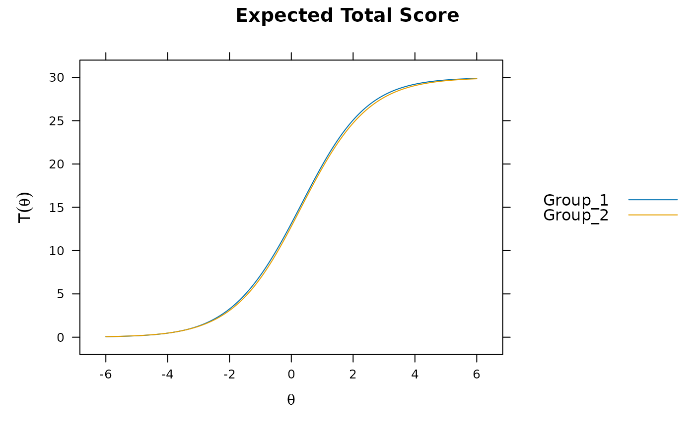
plot(mod, which.items = 6:10) #DBF
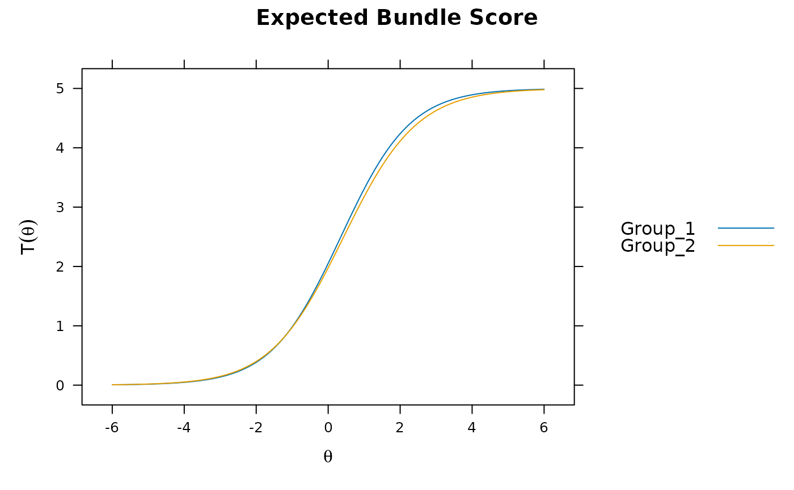
plot(mod, type = 'itemscore')
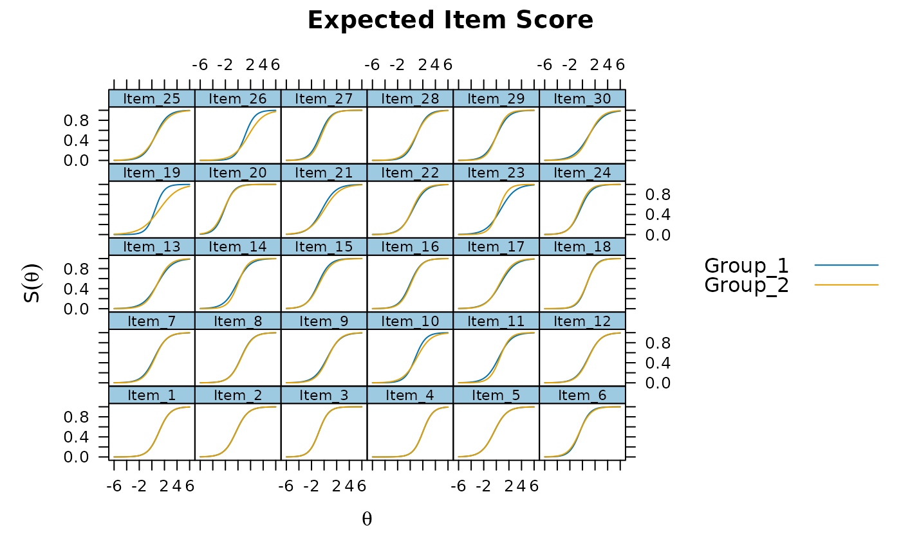
plot(mod, type = 'itemscore', which.items = 10:15)
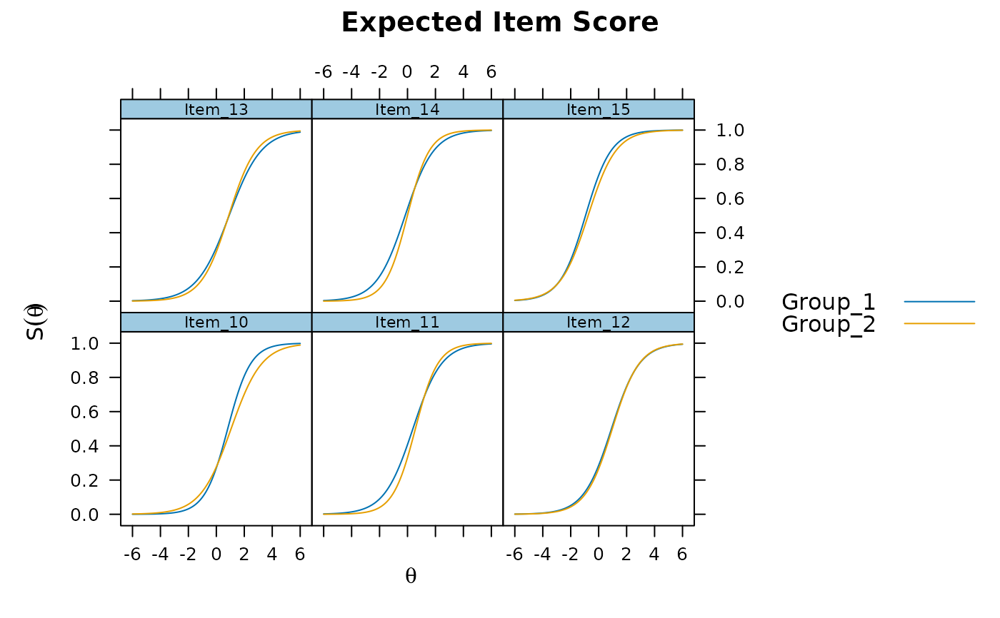
# empirical histogram approach
DRF(mod)
#> groups n_focal_items sDRF uDRF dDRF
#> 1 Group_1,Group_2 30 -0.326 0.326 0.328
DRF(mod, focal_items = 6:10) #DBF
#> groups n_focal_items sDRF uDRF dDRF
#> 1 Group_1,Group_2 5 -0.069 0.071 0.084
DRF(mod, DIF=TRUE)
#> groups item sDIF uDIF dDIF
#> 1 Group_1,Group_2 Item_1 0.000 0.000 0.000
#> 2 Group_1,Group_2 Item_2 0.000 0.000 0.000
#> 3 Group_1,Group_2 Item_3 0.000 0.000 0.000
#> 4 Group_1,Group_2 Item_4 0.000 0.000 0.000
#> 5 Group_1,Group_2 Item_5 0.000 0.000 0.000
#> 6 Group_1,Group_2 Item_6 0.000 0.016 0.018
#> 7 Group_1,Group_2 Item_7 -0.026 0.026 0.028
#> 8 Group_1,Group_2 Item_8 -0.008 0.008 0.008
#> 9 Group_1,Group_2 Item_9 -0.026 0.026 0.028
#> 10 Group_1,Group_2 Item_10 -0.010 0.036 0.044
#> 11 Group_1,Group_2 Item_11 -0.056 0.059 0.065
#> 12 Group_1,Group_2 Item_12 -0.016 0.016 0.017
#> 13 Group_1,Group_2 Item_13 -0.015 0.022 0.025
#> 14 Group_1,Group_2 Item_14 -0.033 0.046 0.054
#> 15 Group_1,Group_2 Item_15 -0.045 0.045 0.047
#> 16 Group_1,Group_2 Item_16 -0.030 0.030 0.032
#> 17 Group_1,Group_2 Item_17 0.018 0.019 0.023
#> 18 Group_1,Group_2 Item_18 0.011 0.013 0.014
#> 19 Group_1,Group_2 Item_19 -0.045 0.094 0.117
#> 20 Group_1,Group_2 Item_20 -0.008 0.010 0.010
#> 21 Group_1,Group_2 Item_21 -0.070 0.070 0.073
#> 22 Group_1,Group_2 Item_22 0.017 0.020 0.024
#> 23 Group_1,Group_2 Item_23 0.036 0.064 0.078
#> 24 Group_1,Group_2 Item_24 0.040 0.040 0.042
#> 25 Group_1,Group_2 Item_25 0.002 0.018 0.021
#> 26 Group_1,Group_2 Item_26 -0.019 0.047 0.065
#> 27 Group_1,Group_2 Item_27 -0.049 0.049 0.052
#> 28 Group_1,Group_2 Item_28 0.027 0.029 0.031
#> 29 Group_1,Group_2 Item_29 0.007 0.025 0.029
#> 30 Group_1,Group_2 Item_30 -0.029 0.031 0.033
DRF(mod, DIF=TRUE, focal_items = 10:15)
#> groups item sDIF uDIF dDIF
#> 1 Group_1,Group_2 Item_10 -0.010 0.036 0.044
#> 2 Group_1,Group_2 Item_11 -0.056 0.059 0.065
#> 3 Group_1,Group_2 Item_12 -0.016 0.016 0.017
#> 4 Group_1,Group_2 Item_13 -0.015 0.022 0.025
#> 5 Group_1,Group_2 Item_14 -0.033 0.046 0.054
#> 6 Group_1,Group_2 Item_15 -0.045 0.045 0.047
# Best-fitting Gaussian distributions
DRF(mod, best_fitting=TRUE)
#> groups n_focal_items sDRF uDRF dDRF
#> 1 Group_1,Group_2 30 -0.326 0.326 0.328
DRF(mod, focal_items = 6:10, best_fitting=TRUE) #DBF
#> groups n_focal_items sDRF uDRF dDRF
#> 1 Group_1,Group_2 5 -0.069 0.071 0.084
DRF(mod, DIF=TRUE, best_fitting=TRUE)
#> groups item sDIF uDIF dDIF
#> 1 Group_1,Group_2 Item_1 0.000 0.000 0.000
#> 2 Group_1,Group_2 Item_2 0.000 0.000 0.000
#> 3 Group_1,Group_2 Item_3 0.000 0.000 0.000
#> 4 Group_1,Group_2 Item_4 0.000 0.000 0.000
#> 5 Group_1,Group_2 Item_5 0.000 0.000 0.000
#> 6 Group_1,Group_2 Item_6 0.000 0.016 0.018
#> 7 Group_1,Group_2 Item_7 -0.026 0.026 0.028
#> 8 Group_1,Group_2 Item_8 -0.008 0.008 0.008
#> 9 Group_1,Group_2 Item_9 -0.026 0.026 0.028
#> 10 Group_1,Group_2 Item_10 -0.010 0.036 0.045
#> 11 Group_1,Group_2 Item_11 -0.056 0.059 0.065
#> 12 Group_1,Group_2 Item_12 -0.016 0.016 0.017
#> 13 Group_1,Group_2 Item_13 -0.015 0.023 0.025
#> 14 Group_1,Group_2 Item_14 -0.033 0.046 0.054
#> 15 Group_1,Group_2 Item_15 -0.045 0.045 0.047
#> 16 Group_1,Group_2 Item_16 -0.030 0.030 0.032
#> 17 Group_1,Group_2 Item_17 0.018 0.019 0.023
#> 18 Group_1,Group_2 Item_18 0.011 0.013 0.014
#> 19 Group_1,Group_2 Item_19 -0.045 0.094 0.118
#> 20 Group_1,Group_2 Item_20 -0.008 0.010 0.010
#> 21 Group_1,Group_2 Item_21 -0.070 0.070 0.073
#> 22 Group_1,Group_2 Item_22 0.017 0.020 0.024
#> 23 Group_1,Group_2 Item_23 0.036 0.064 0.078
#> 24 Group_1,Group_2 Item_24 0.040 0.040 0.042
#> 25 Group_1,Group_2 Item_25 0.002 0.019 0.021
#> 26 Group_1,Group_2 Item_26 -0.019 0.047 0.065
#> 27 Group_1,Group_2 Item_27 -0.049 0.049 0.052
#> 28 Group_1,Group_2 Item_28 0.027 0.029 0.031
#> 29 Group_1,Group_2 Item_29 0.007 0.025 0.028
#> 30 Group_1,Group_2 Item_30 -0.029 0.031 0.033
DRF(mod, DIF=TRUE, focal_items = 10:15, best_fitting=TRUE)
#> groups item sDIF uDIF dDIF
#> 1 Group_1,Group_2 Item_10 -0.010 0.036 0.045
#> 2 Group_1,Group_2 Item_11 -0.056 0.059 0.065
#> 3 Group_1,Group_2 Item_12 -0.016 0.016 0.017
#> 4 Group_1,Group_2 Item_13 -0.015 0.023 0.025
#> 5 Group_1,Group_2 Item_14 -0.033 0.046 0.054
#> 6 Group_1,Group_2 Item_15 -0.045 0.045 0.047
DRF(mod, plot = TRUE)
DRF(mod, focal_items = 6:10, plot = TRUE) #DBF
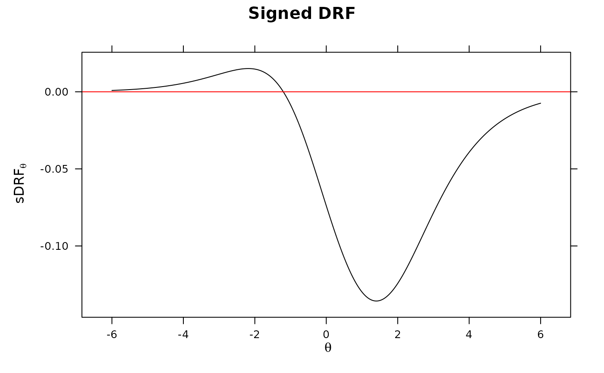
DRF(mod, DIF=TRUE, plot = TRUE)
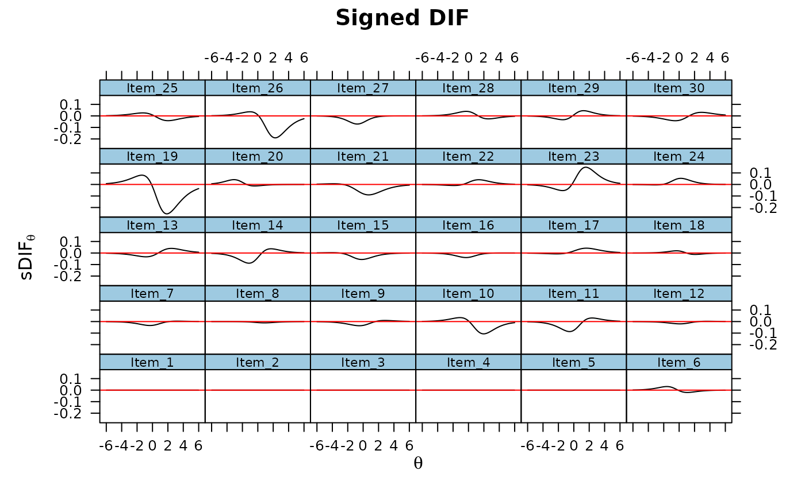
DRF(mod, DIF=TRUE, focal_items = 10:15, plot = TRUE)
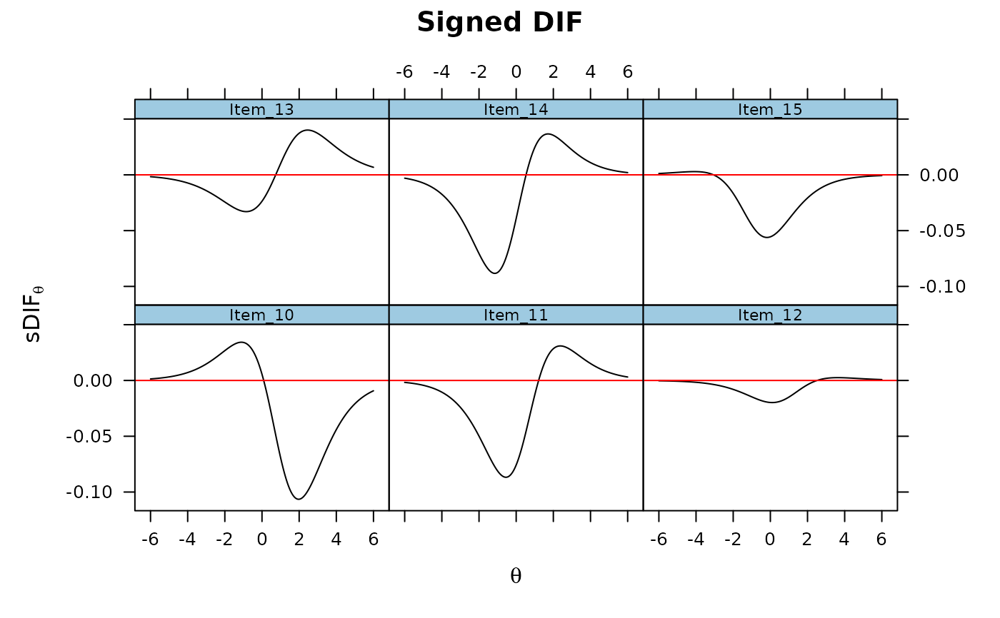
if(interactive()) mirtCluster()
DRF(mod, draws = 500)
#> groups n_focal_items stat CI_2.5 CI_97.5 X2 df p
#> sDRF Group_1,Group_2 30 -0.326 -0.957 0.360 0.982 1 0.322
#> uDRF Group_1,Group_2 30 0.326 0.102 0.957 2.642 2 0.267
#> dDRF Group_1,Group_2 30 0.328 0.125 1.044
DRF(mod, draws = 500, best_fitting=TRUE)
#> groups n_focal_items stat CI_2.5 CI_97.5 X2 df p
#> sDRF Group_1,Group_2 30 -0.326 -0.977 0.339 0.939 1 0.333
#> uDRF Group_1,Group_2 30 0.326 0.095 0.977 2.613 2 0.271
#> dDRF Group_1,Group_2 30 0.328 0.108 1.086
DRF(mod, draws = 500, plot=TRUE)
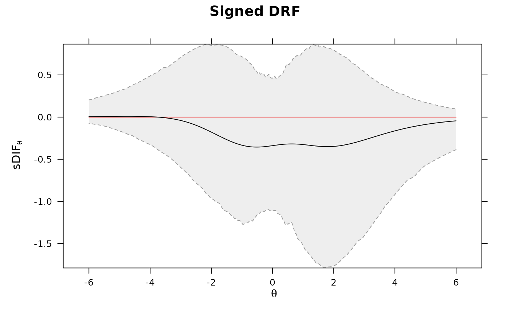
# pre-draw parameter set to save computations
# (more useful when using non-parametric bootstrap)
param_set <- draw_parameters(mod, draws = 500)
DRF(mod, focal_items = 6, param_set=param_set) #DIF test
#> groups n_focal_items stat CI_2.5 CI_97.5 X2 df p
#> sDRF Group_1,Group_2 1 0.000 -0.058 0.066 0 1 0.998
#> uDRF Group_1,Group_2 1 0.016 0.007 0.085 0.766 2 0.682
#> dDRF Group_1,Group_2 1 0.018 0.008 0.098
DRF(mod, DIF=TRUE, param_set=param_set) #DIF test
#> $sDIF
#> groups item sDIF CI_2.5 CI_97.5 X2 df p
#> 1 Group_1,Group_2 Item_1 0.000 0.000 0.000
#> 2 Group_1,Group_2 Item_2 0.000 0.000 0.000
#> 3 Group_1,Group_2 Item_3 0.000 0.000 0.000
#> 4 Group_1,Group_2 Item_4 0.000 0.000 0.000
#> 5 Group_1,Group_2 Item_5 0.000 0.000 0.000
#> 6 Group_1,Group_2 Item_6 0.000 -0.058 0.066 0 1 0.998
#> 7 Group_1,Group_2 Item_7 -0.026 -0.087 0.040 0.653 1 0.419
#> 8 Group_1,Group_2 Item_8 -0.008 -0.060 0.058 0.065 1 0.798
#> 9 Group_1,Group_2 Item_9 -0.026 -0.091 0.031 0.648 1 0.421
#> 10 Group_1,Group_2 Item_10 -0.010 -0.072 0.048 0.101 1 0.751
#> 11 Group_1,Group_2 Item_11 -0.056 -0.116 0.003 3.556 1 0.059
#> 12 Group_1,Group_2 Item_12 -0.016 -0.074 0.038 0.305 1 0.581
#> 13 Group_1,Group_2 Item_13 -0.015 -0.075 0.042 0.233 1 0.629
#> 14 Group_1,Group_2 Item_14 -0.033 -0.096 0.027 1.029 1 0.31
#> 15 Group_1,Group_2 Item_15 -0.045 -0.103 0.012 2.479 1 0.115
#> 16 Group_1,Group_2 Item_16 -0.030 -0.098 0.036 0.882 1 0.348
#> 17 Group_1,Group_2 Item_17 0.018 -0.042 0.079 0.31 1 0.578
#> 18 Group_1,Group_2 Item_18 0.011 -0.051 0.072 0.126 1 0.723
#> 19 Group_1,Group_2 Item_19 -0.045 -0.103 0.011 2.292 1 0.13
#> 20 Group_1,Group_2 Item_20 -0.008 -0.045 0.034 0.16 1 0.689
#> 21 Group_1,Group_2 Item_21 -0.070 -0.133 -0.006 4.678 1 0.031
#> 22 Group_1,Group_2 Item_22 0.017 -0.048 0.071 0.312 1 0.576
#> 23 Group_1,Group_2 Item_23 0.036 -0.031 0.098 1.292 1 0.256
#> 24 Group_1,Group_2 Item_24 0.040 -0.021 0.097 1.787 1 0.181
#> 25 Group_1,Group_2 Item_25 0.002 -0.062 0.061 0.004 1 0.949
#> 26 Group_1,Group_2 Item_26 -0.019 -0.075 0.037 0.47 1 0.493
#> 27 Group_1,Group_2 Item_27 -0.049 -0.111 0.014 2.298 1 0.13
#> 28 Group_1,Group_2 Item_28 0.027 -0.036 0.090 0.681 1 0.409
#> 29 Group_1,Group_2 Item_29 0.007 -0.057 0.073 0.05 1 0.823
#> 30 Group_1,Group_2 Item_30 -0.029 -0.092 0.022 1.001 1 0.317
#>
#> $uDIF
#> groups item uDIF CI_2.5 CI_97.5 X2 df p
#> 1 Group_1,Group_2 Item_1 0.000 0.000 0.000
#> 2 Group_1,Group_2 Item_2 0.000 0.000 0.000
#> 3 Group_1,Group_2 Item_3 0.000 0.000 0.000
#> 4 Group_1,Group_2 Item_4 0.000 0.000 0.000
#> 5 Group_1,Group_2 Item_5 0.000 0.000 0.000
#> 6 Group_1,Group_2 Item_6 0.016 0.007 0.085 0.766 2 0.682
#> 7 Group_1,Group_2 Item_7 0.026 0.008 0.090 1.944 2 0.378
#> 8 Group_1,Group_2 Item_8 0.008 0.005 0.073 0.225 2 0.894
#> 9 Group_1,Group_2 Item_9 0.026 0.009 0.093 2.093 2 0.351
#> 10 Group_1,Group_2 Item_10 0.036 0.008 0.107 3.278 2 0.194
#> 11 Group_1,Group_2 Item_11 0.059 0.015 0.113 10.148 2 0.006
#> 12 Group_1,Group_2 Item_12 0.016 0.005 0.074 0.848 2 0.654
#> 13 Group_1,Group_2 Item_13 0.022 0.007 0.084 1.691 2 0.429
#> 14 Group_1,Group_2 Item_14 0.046 0.012 0.108 5.685 2 0.058
#> 15 Group_1,Group_2 Item_15 0.045 0.013 0.103 6.042 2 0.049
#> 16 Group_1,Group_2 Item_16 0.030 0.008 0.100 2.552 2 0.279
#> 17 Group_1,Group_2 Item_17 0.019 0.006 0.087 0.994 2 0.608
#> 18 Group_1,Group_2 Item_18 0.013 0.005 0.081 0.397 2 0.82
#> 19 Group_1,Group_2 Item_19 0.094 0.046 0.145 24.256 2 0
#> 20 Group_1,Group_2 Item_20 0.010 0.004 0.051 0.567 2 0.753
#> 21 Group_1,Group_2 Item_21 0.070 0.016 0.132 10.312 2 0.006
#> 22 Group_1,Group_2 Item_22 0.020 0.007 0.087 1.065 2 0.587
#> 23 Group_1,Group_2 Item_23 0.064 0.022 0.119 8.046 2 0.018
#> 24 Group_1,Group_2 Item_24 0.040 0.011 0.100 2.796 2 0.247
#> 25 Group_1,Group_2 Item_25 0.018 0.009 0.094 0.867 2 0.648
#> 26 Group_1,Group_2 Item_26 0.047 0.012 0.098 6.43 2 0.04
#> 27 Group_1,Group_2 Item_27 0.049 0.010 0.111 5.454 2 0.065
#> 28 Group_1,Group_2 Item_28 0.029 0.008 0.098 1.636 2 0.441
#> 29 Group_1,Group_2 Item_29 0.025 0.008 0.086 1.643 2 0.44
#> 30 Group_1,Group_2 Item_30 0.031 0.010 0.094 3.233 2 0.199
#>
#> $dDIF
#> groups item dDIF CI_2.5 CI_97.5
#> 1 Group_1,Group_2 Item_1 0.000 0.000 0.000
#> 2 Group_1,Group_2 Item_2 0.000 0.000 0.000
#> 3 Group_1,Group_2 Item_3 0.000 0.000 0.000
#> 4 Group_1,Group_2 Item_4 0.000 0.000 0.000
#> 5 Group_1,Group_2 Item_5 0.000 0.000 0.000
#> 6 Group_1,Group_2 Item_6 0.018 0.008 0.098
#> 7 Group_1,Group_2 Item_7 0.028 0.009 0.101
#> 8 Group_1,Group_2 Item_8 0.008 0.006 0.084
#> 9 Group_1,Group_2 Item_9 0.028 0.011 0.102
#> 10 Group_1,Group_2 Item_10 0.044 0.010 0.127
#> 11 Group_1,Group_2 Item_11 0.065 0.015 0.123
#> 12 Group_1,Group_2 Item_12 0.017 0.007 0.091
#> 13 Group_1,Group_2 Item_13 0.025 0.009 0.094
#> 14 Group_1,Group_2 Item_14 0.054 0.014 0.124
#> 15 Group_1,Group_2 Item_15 0.047 0.015 0.112
#> 16 Group_1,Group_2 Item_16 0.032 0.009 0.109
#> 17 Group_1,Group_2 Item_17 0.023 0.007 0.101
#> 18 Group_1,Group_2 Item_18 0.014 0.006 0.091
#> 19 Group_1,Group_2 Item_19 0.117 0.058 0.179
#> 20 Group_1,Group_2 Item_20 0.010 0.005 0.079
#> 21 Group_1,Group_2 Item_21 0.073 0.017 0.140
#> 22 Group_1,Group_2 Item_22 0.024 0.008 0.097
#> 23 Group_1,Group_2 Item_23 0.078 0.025 0.140
#> 24 Group_1,Group_2 Item_24 0.042 0.012 0.108
#> 25 Group_1,Group_2 Item_25 0.021 0.010 0.102
#> 26 Group_1,Group_2 Item_26 0.065 0.015 0.130
#> 27 Group_1,Group_2 Item_27 0.052 0.012 0.122
#> 28 Group_1,Group_2 Item_28 0.031 0.010 0.106
#> 29 Group_1,Group_2 Item_29 0.029 0.009 0.096
#> 30 Group_1,Group_2 Item_30 0.033 0.011 0.100
#>
DRF(mod, focal_items = 6:10, param_set=param_set) #DBF test
#> groups n_focal_items stat CI_2.5 CI_97.5 X2 df p
#> sDRF Group_1,Group_2 5 -0.069 -0.242 0.119 0.569 1 0.451
#> uDRF Group_1,Group_2 5 0.071 0.018 0.249 2.027 2 0.363
#> dDRF Group_1,Group_2 5 0.084 0.023 0.285
DRF(mod, param_set=param_set) #DTF test
#> groups n_focal_items stat CI_2.5 CI_97.5 X2 df p
#> sDRF Group_1,Group_2 30 -0.326 -1.036 0.404 0.876 1 0.349
#> uDRF Group_1,Group_2 30 0.326 0.099 1.047 2.482 2 0.289
#> dDRF Group_1,Group_2 30 0.328 0.128 1.130
DRF(mod, focal_items = 6:10, draws=500) #DBF test
#> groups n_focal_items stat CI_2.5 CI_97.5 X2 df p
#> sDRF Group_1,Group_2 5 -0.069 -0.239 0.094 0.658 1 0.417
#> uDRF Group_1,Group_2 5 0.071 0.020 0.254 2.142 2 0.343
#> dDRF Group_1,Group_2 5 0.084 0.023 0.295
DRF(mod, focal_items = 10:15, draws=500) #DBF test
#> groups n_focal_items stat CI_2.5 CI_97.5 X2 df p
#> sDRF Group_1,Group_2 6 -0.175 -0.382 0.024 2.989 1 0.084
#> uDRF Group_1,Group_2 6 0.175 0.047 0.392 7.228 2 0.027
#> dDRF Group_1,Group_2 6 0.185 0.054 0.415
DIFs <- DRF(mod, draws = 500, DIF=TRUE)
print(DIFs)
#> $sDIF
#> groups item sDIF CI_2.5 CI_97.5 X2 df p
#> 1 Group_1,Group_2 Item_1 0.000 0.000 0.000
#> 2 Group_1,Group_2 Item_2 0.000 0.000 0.000
#> 3 Group_1,Group_2 Item_3 0.000 0.000 0.000
#> 4 Group_1,Group_2 Item_4 0.000 0.000 0.000
#> 5 Group_1,Group_2 Item_5 0.000 0.000 0.000
#> 6 Group_1,Group_2 Item_6 0.000 -0.058 0.062 0 1 0.998
#> 7 Group_1,Group_2 Item_7 -0.026 -0.087 0.035 0.717 1 0.397
#> 8 Group_1,Group_2 Item_8 -0.008 -0.074 0.053 0.058 1 0.809
#> 9 Group_1,Group_2 Item_9 -0.026 -0.084 0.044 0.717 1 0.397
#> 10 Group_1,Group_2 Item_10 -0.010 -0.063 0.041 0.119 1 0.73
#> 11 Group_1,Group_2 Item_11 -0.056 -0.118 0.003 3.205 1 0.073
#> 12 Group_1,Group_2 Item_12 -0.016 -0.078 0.041 0.288 1 0.591
#> 13 Group_1,Group_2 Item_13 -0.015 -0.073 0.042 0.261 1 0.609
#> 14 Group_1,Group_2 Item_14 -0.033 -0.097 0.036 1.077 1 0.299
#> 15 Group_1,Group_2 Item_15 -0.045 -0.101 0.013 2.454 1 0.117
#> 16 Group_1,Group_2 Item_16 -0.030 -0.096 0.033 0.869 1 0.351
#> 17 Group_1,Group_2 Item_17 0.018 -0.041 0.076 0.317 1 0.573
#> 18 Group_1,Group_2 Item_18 0.011 -0.051 0.068 0.131 1 0.717
#> 19 Group_1,Group_2 Item_19 -0.045 -0.105 0.012 2.273 1 0.132
#> 20 Group_1,Group_2 Item_20 -0.008 -0.044 0.039 0.15 1 0.699
#> 21 Group_1,Group_2 Item_21 -0.070 -0.128 -0.007 5.598 1 0.018
#> 22 Group_1,Group_2 Item_22 0.017 -0.044 0.084 0.294 1 0.588
#> 23 Group_1,Group_2 Item_23 0.036 -0.027 0.100 1.299 1 0.254
#> 24 Group_1,Group_2 Item_24 0.040 -0.026 0.112 1.451 1 0.228
#> 25 Group_1,Group_2 Item_25 0.002 -0.064 0.061 0.004 1 0.948
#> 26 Group_1,Group_2 Item_26 -0.019 -0.069 0.032 0.457 1 0.499
#> 27 Group_1,Group_2 Item_27 -0.049 -0.108 0.015 2.687 1 0.101
#> 28 Group_1,Group_2 Item_28 0.027 -0.028 0.087 0.835 1 0.361
#> 29 Group_1,Group_2 Item_29 0.007 -0.058 0.072 0.053 1 0.819
#> 30 Group_1,Group_2 Item_30 -0.029 -0.088 0.029 0.946 1 0.331
#>
#> $uDIF
#> groups item uDIF CI_2.5 CI_97.5 X2 df p
#> 1 Group_1,Group_2 Item_1 0.000 0.000 0.000
#> 2 Group_1,Group_2 Item_2 0.000 0.000 0.000
#> 3 Group_1,Group_2 Item_3 0.000 0.000 0.000
#> 4 Group_1,Group_2 Item_4 0.000 0.000 0.000
#> 5 Group_1,Group_2 Item_5 0.000 0.000 0.000
#> 6 Group_1,Group_2 Item_6 0.016 0.005 0.083 0.761 2 0.684
#> 7 Group_1,Group_2 Item_7 0.026 0.007 0.087 2.145 2 0.342
#> 8 Group_1,Group_2 Item_8 0.008 0.007 0.083 0.189 2 0.91
#> 9 Group_1,Group_2 Item_9 0.026 0.009 0.090 2.362 2 0.307
#> 10 Group_1,Group_2 Item_10 0.036 0.008 0.094 3.754 2 0.153
#> 11 Group_1,Group_2 Item_11 0.059 0.018 0.119 9.247 2 0.01
#> 12 Group_1,Group_2 Item_12 0.016 0.008 0.081 0.891 2 0.64
#> 13 Group_1,Group_2 Item_13 0.022 0.007 0.079 1.965 2 0.374
#> 14 Group_1,Group_2 Item_14 0.046 0.011 0.109 5.687 2 0.058
#> 15 Group_1,Group_2 Item_15 0.045 0.012 0.101 5.996 2 0.05
#> 16 Group_1,Group_2 Item_16 0.030 0.008 0.096 2.457 2 0.293
#> 17 Group_1,Group_2 Item_17 0.019 0.007 0.084 1.061 2 0.588
#> 18 Group_1,Group_2 Item_18 0.013 0.007 0.078 0.439 2 0.803
#> 19 Group_1,Group_2 Item_19 0.094 0.047 0.148 22.425 2 0
#> 20 Group_1,Group_2 Item_20 0.010 0.004 0.053 0.533 2 0.766
#> 21 Group_1,Group_2 Item_21 0.070 0.022 0.129 12.429 2 0.002
#> 22 Group_1,Group_2 Item_22 0.020 0.006 0.089 1.017 2 0.601
#> 23 Group_1,Group_2 Item_23 0.064 0.018 0.121 7.167 2 0.028
#> 24 Group_1,Group_2 Item_24 0.040 0.008 0.112 2.247 2 0.325
#> 25 Group_1,Group_2 Item_25 0.018 0.006 0.086 0.917 2 0.632
#> 26 Group_1,Group_2 Item_26 0.047 0.013 0.096 6.621 2 0.036
#> 27 Group_1,Group_2 Item_27 0.049 0.013 0.108 6.466 2 0.039
#> 28 Group_1,Group_2 Item_28 0.029 0.010 0.088 1.805 2 0.405
#> 29 Group_1,Group_2 Item_29 0.025 0.009 0.085 1.808 2 0.405
#> 30 Group_1,Group_2 Item_30 0.031 0.008 0.093 3.105 2 0.212
#>
#> $dDIF
#> groups item dDIF CI_2.5 CI_97.5
#> 1 Group_1,Group_2 Item_1 0.000 0.000 0.000
#> 2 Group_1,Group_2 Item_2 0.000 0.000 0.000
#> 3 Group_1,Group_2 Item_3 0.000 0.000 0.000
#> 4 Group_1,Group_2 Item_4 0.000 0.000 0.000
#> 5 Group_1,Group_2 Item_5 0.000 0.000 0.000
#> 6 Group_1,Group_2 Item_6 0.018 0.006 0.092
#> 7 Group_1,Group_2 Item_7 0.028 0.008 0.095
#> 8 Group_1,Group_2 Item_8 0.008 0.007 0.094
#> 9 Group_1,Group_2 Item_9 0.028 0.011 0.097
#> 10 Group_1,Group_2 Item_10 0.044 0.010 0.114
#> 11 Group_1,Group_2 Item_11 0.065 0.020 0.131
#> 12 Group_1,Group_2 Item_12 0.017 0.009 0.088
#> 13 Group_1,Group_2 Item_13 0.025 0.008 0.088
#> 14 Group_1,Group_2 Item_14 0.054 0.013 0.126
#> 15 Group_1,Group_2 Item_15 0.047 0.014 0.111
#> 16 Group_1,Group_2 Item_16 0.032 0.009 0.103
#> 17 Group_1,Group_2 Item_17 0.023 0.008 0.096
#> 18 Group_1,Group_2 Item_18 0.014 0.008 0.091
#> 19 Group_1,Group_2 Item_19 0.117 0.056 0.183
#> 20 Group_1,Group_2 Item_20 0.010 0.006 0.079
#> 21 Group_1,Group_2 Item_21 0.073 0.025 0.138
#> 22 Group_1,Group_2 Item_22 0.024 0.007 0.099
#> 23 Group_1,Group_2 Item_23 0.078 0.019 0.144
#> 24 Group_1,Group_2 Item_24 0.042 0.009 0.118
#> 25 Group_1,Group_2 Item_25 0.021 0.007 0.104
#> 26 Group_1,Group_2 Item_26 0.065 0.017 0.135
#> 27 Group_1,Group_2 Item_27 0.052 0.014 0.118
#> 28 Group_1,Group_2 Item_28 0.031 0.011 0.099
#> 29 Group_1,Group_2 Item_29 0.029 0.010 0.095
#> 30 Group_1,Group_2 Item_30 0.033 0.009 0.101
#>
DRF(mod, draws = 500, DIF=TRUE, plot=TRUE)
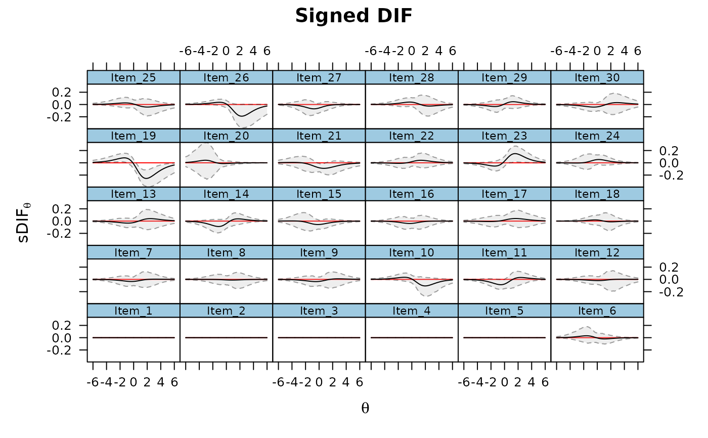
DIFs <- DRF(mod, draws = 500, DIF=TRUE, focal_items = 6:10)
print(DIFs)
#> $sDIF
#> groups item sDIF CI_2.5 CI_97.5 X2 df p
#> 1 Group_1,Group_2 Item_6 0.000 -0.066 0.064 0 1 0.998
#> 2 Group_1,Group_2 Item_7 -0.026 -0.083 0.040 0.696 1 0.404
#> 3 Group_1,Group_2 Item_8 -0.008 -0.074 0.045 0.062 1 0.804
#> 4 Group_1,Group_2 Item_9 -0.026 -0.089 0.037 0.739 1 0.39
#> 5 Group_1,Group_2 Item_10 -0.010 -0.070 0.045 0.113 1 0.737
#>
#> $uDIF
#> groups item uDIF CI_2.5 CI_97.5 X2 df p
#> 1 Group_1,Group_2 Item_6 0.016 0.006 0.081 0.786 2 0.675
#> 2 Group_1,Group_2 Item_7 0.026 0.007 0.090 2.051 2 0.359
#> 3 Group_1,Group_2 Item_8 0.008 0.007 0.080 0.215 2 0.898
#> 4 Group_1,Group_2 Item_9 0.026 0.007 0.089 2.358 2 0.308
#> 5 Group_1,Group_2 Item_10 0.036 0.008 0.093 3.28 2 0.194
#>
#> $dDIF
#> groups item dDIF CI_2.5 CI_97.5
#> 1 Group_1,Group_2 Item_6 0.018 0.007 0.092
#> 2 Group_1,Group_2 Item_7 0.028 0.008 0.100
#> 3 Group_1,Group_2 Item_8 0.008 0.008 0.090
#> 4 Group_1,Group_2 Item_9 0.028 0.009 0.096
#> 5 Group_1,Group_2 Item_10 0.044 0.009 0.121
#>
DRF(mod, draws = 500, DIF=TRUE, focal_items = 6:10, plot = TRUE)
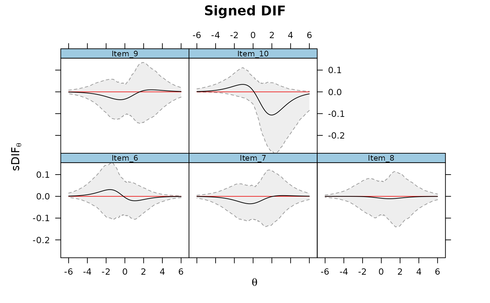
DRF(mod, DIF=TRUE, focal_items = 6)
#> groups item sDIF uDIF dDIF
#> 1 Group_1,Group_2 Item_6 0 0.016 0.018
DRF(mod, draws=500, DIF=TRUE, focal_items = 6)
#> $sDIF
#> groups item sDIF CI_2.5 CI_97.5 X2 df p
#> 1 Group_1,Group_2 Item_6 0 -0.059 0.058 0 1 0.998
#>
#> $uDIF
#> groups item uDIF CI_2.5 CI_97.5 X2 df p
#> 1 Group_1,Group_2 Item_6 0.016 0.006 0.076 0.823 2 0.663
#>
#> $dDIF
#> groups item dDIF CI_2.5 CI_97.5
#> 1 Group_1,Group_2 Item_6 0.018 0.006 0.088
#>
# evaluate specific values for sDRF
Theta_nodes <- matrix(seq(-6,6,length.out = 100))
sDTF <- DRF(mod, Theta_nodes=Theta_nodes)
head(sDTF)
#> Theta sDRF
#> sDRF.1 -6.000 0.006
#> sDRF.2 -5.879 0.006
#> sDRF.3 -5.758 0.006
#> sDRF.4 -5.636 0.007
#> sDRF.5 -5.515 0.007
#> sDRF.6 -5.394 0.008
sDTF <- DRF(mod, Theta_nodes=Theta_nodes, draws=200)
head(sDTF)
#> Theta sDRF CI_2.5 CI_97.5
#> sDRF.1 -6.000 0.006 -0.076 0.185
#> sDRF.2 -5.879 0.006 -0.083 0.199
#> sDRF.3 -5.758 0.006 -0.090 0.214
#> sDRF.4 -5.636 0.007 -0.098 0.230
#> sDRF.5 -5.515 0.007 -0.107 0.242
#> sDRF.6 -5.394 0.008 -0.117 0.256
# sDIF (isolate single item)
sDIF <- DRF(mod, Theta_nodes=Theta_nodes, focal_items=6)
head(sDIF)
#> Theta sDRF
#> sDRF.1 -6.000 0.001
#> sDRF.2 -5.879 0.001
#> sDRF.3 -5.758 0.001
#> sDRF.4 -5.636 0.002
#> sDRF.5 -5.515 0.002
#> sDRF.6 -5.394 0.002
sDIF <- DRF(mod, Theta_nodes=Theta_nodes, focal_items = 6, draws=200)
head(sDIF)
#> Theta sDRF CI_2.5 CI_97.5
#> sDRF.1 -6.000 0.001 -0.005 0.013
#> sDRF.2 -5.879 0.001 -0.005 0.014
#> sDRF.3 -5.758 0.001 -0.006 0.015
#> sDRF.4 -5.636 0.002 -0.006 0.017
#> sDRF.5 -5.515 0.002 -0.007 0.018
#> sDRF.6 -5.394 0.002 -0.008 0.020
## -------------
## random slopes and intercepts for 15 items, and latent mean difference
## (no systematic DTF should exist, but DIF will be present)
set.seed(1234)
dat1 <- simdata(a, d, N, itemtype = 'dich', mu=.50, sigma=matrix(1.5))
dat2 <- simdata(a + c(numeric(15), rnorm(n-15, 0, .25)),
d + c(numeric(15), rnorm(n-15, 0, .5)), N, itemtype = 'dich')
dat <- rbind(dat1, dat2)
mod1 <- multipleGroup(dat, 1, group=group)
#>
Iteration: 1, Log-Lik: -17016.937, Max-Change: 0.77653
Iteration: 2, Log-Lik: -16841.938, Max-Change: 0.13114
Iteration: 3, Log-Lik: -16814.160, Max-Change: 0.07720
Iteration: 4, Log-Lik: -16800.972, Max-Change: 0.05737
Iteration: 5, Log-Lik: -16792.963, Max-Change: 0.05283
Iteration: 6, Log-Lik: -16788.358, Max-Change: 0.03250
Iteration: 7, Log-Lik: -16782.410, Max-Change: 0.04262
Iteration: 8, Log-Lik: -16781.387, Max-Change: 0.02834
Iteration: 9, Log-Lik: -16780.674, Max-Change: 0.01307
Iteration: 10, Log-Lik: -16779.468, Max-Change: 0.01876
Iteration: 11, Log-Lik: -16779.238, Max-Change: 0.00931
Iteration: 12, Log-Lik: -16779.059, Max-Change: 0.00865
Iteration: 13, Log-Lik: -16778.555, Max-Change: 0.00603
Iteration: 14, Log-Lik: -16778.528, Max-Change: 0.00299
Iteration: 15, Log-Lik: -16778.508, Max-Change: 0.00351
Iteration: 16, Log-Lik: -16778.449, Max-Change: 0.00360
Iteration: 17, Log-Lik: -16778.443, Max-Change: 0.00333
Iteration: 18, Log-Lik: -16778.439, Max-Change: 0.00134
Iteration: 19, Log-Lik: -16778.433, Max-Change: 0.00131
Iteration: 20, Log-Lik: -16778.431, Max-Change: 0.00188
Iteration: 21, Log-Lik: -16778.429, Max-Change: 0.00097
Iteration: 22, Log-Lik: -16778.426, Max-Change: 0.00155
Iteration: 23, Log-Lik: -16778.425, Max-Change: 0.00057
Iteration: 24, Log-Lik: -16778.425, Max-Change: 0.00091
Iteration: 25, Log-Lik: -16778.423, Max-Change: 0.00042
Iteration: 26, Log-Lik: -16778.423, Max-Change: 0.00029
Iteration: 27, Log-Lik: -16778.423, Max-Change: 0.00027
Iteration: 28, Log-Lik: -16778.422, Max-Change: 0.00025
Iteration: 29, Log-Lik: -16778.422, Max-Change: 0.00020
Iteration: 30, Log-Lik: -16778.422, Max-Change: 0.00018
Iteration: 31, Log-Lik: -16778.421, Max-Change: 0.00009
plot(mod1)
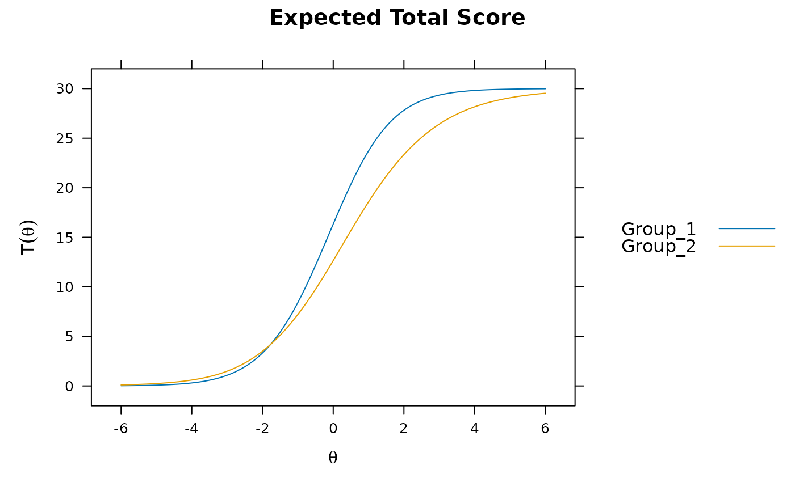
DRF(mod1) #does not account for group differences! Need anchors
#> No hyper-parameters were estimated in the DIF model. For effective
#> DRF testing freeing the focal group hyper-parameters is recommended.
#> groups n_focal_items sDRF uDRF dDRF
#> 1 Group_1,Group_2 30 -3.25 3.268 3.642
mod2 <- multipleGroup(dat, model, group=group, SE=TRUE,
invariance=c('free_means', 'free_var'))
#>
Iteration: 1, Log-Lik: -16998.048, Max-Change: 0.73754
Iteration: 2, Log-Lik: -16830.291, Max-Change: 0.11171
Iteration: 3, Log-Lik: -16810.200, Max-Change: 0.06898
Iteration: 4, Log-Lik: -16801.281, Max-Change: 0.04649
Iteration: 5, Log-Lik: -16796.494, Max-Change: 0.03251
Iteration: 6, Log-Lik: -16793.590, Max-Change: 0.02705
Iteration: 7, Log-Lik: -16788.901, Max-Change: 0.07076
Iteration: 8, Log-Lik: -16787.801, Max-Change: 0.02865
Iteration: 9, Log-Lik: -16787.122, Max-Change: 0.02412
Iteration: 10, Log-Lik: -16785.886, Max-Change: 0.08585
Iteration: 11, Log-Lik: -16784.361, Max-Change: 0.01980
Iteration: 12, Log-Lik: -16784.051, Max-Change: 0.01492
Iteration: 13, Log-Lik: -16783.563, Max-Change: 0.05323
Iteration: 14, Log-Lik: -16782.794, Max-Change: 0.01261
Iteration: 15, Log-Lik: -16782.645, Max-Change: 0.01077
Iteration: 16, Log-Lik: -16782.421, Max-Change: 0.03442
Iteration: 17, Log-Lik: -16782.041, Max-Change: 0.00826
Iteration: 18, Log-Lik: -16781.968, Max-Change: 0.00795
Iteration: 19, Log-Lik: -16781.861, Max-Change: 0.02287
Iteration: 20, Log-Lik: -16781.671, Max-Change: 0.00560
Iteration: 21, Log-Lik: -16781.635, Max-Change: 0.00578
Iteration: 22, Log-Lik: -16781.583, Max-Change: 0.01562
Iteration: 23, Log-Lik: -16781.487, Max-Change: 0.00386
Iteration: 24, Log-Lik: -16781.468, Max-Change: 0.00420
Iteration: 25, Log-Lik: -16781.443, Max-Change: 0.01083
Iteration: 26, Log-Lik: -16781.394, Max-Change: 0.00270
Iteration: 27, Log-Lik: -16781.384, Max-Change: 0.00306
Iteration: 28, Log-Lik: -16781.372, Max-Change: 0.00762
Iteration: 29, Log-Lik: -16781.346, Max-Change: 0.00195
Iteration: 30, Log-Lik: -16781.341, Max-Change: 0.00223
Iteration: 31, Log-Lik: -16781.335, Max-Change: 0.00542
Iteration: 32, Log-Lik: -16781.322, Max-Change: 0.00141
Iteration: 33, Log-Lik: -16781.319, Max-Change: 0.00155
Iteration: 34, Log-Lik: -16781.316, Max-Change: 0.00384
Iteration: 35, Log-Lik: -16781.309, Max-Change: 0.00110
Iteration: 36, Log-Lik: -16781.308, Max-Change: 0.00116
Iteration: 37, Log-Lik: -16781.306, Max-Change: 0.00278
Iteration: 38, Log-Lik: -16781.303, Max-Change: 0.00075
Iteration: 39, Log-Lik: -16781.302, Max-Change: 0.00086
Iteration: 40, Log-Lik: -16781.301, Max-Change: 0.00203
Iteration: 41, Log-Lik: -16781.299, Max-Change: 0.00058
Iteration: 42, Log-Lik: -16781.299, Max-Change: 0.00056
Iteration: 43, Log-Lik: -16781.298, Max-Change: 0.00141
Iteration: 44, Log-Lik: -16781.297, Max-Change: 0.00053
Iteration: 45, Log-Lik: -16781.297, Max-Change: 0.00048
Iteration: 46, Log-Lik: -16781.297, Max-Change: 0.00106
Iteration: 47, Log-Lik: -16781.296, Max-Change: 0.00029
Iteration: 48, Log-Lik: -16781.296, Max-Change: 0.00031
Iteration: 49, Log-Lik: -16781.296, Max-Change: 0.00077
Iteration: 50, Log-Lik: -16781.296, Max-Change: 0.00024
Iteration: 51, Log-Lik: -16781.296, Max-Change: 0.00024
Iteration: 52, Log-Lik: -16781.296, Max-Change: 0.00057
Iteration: 53, Log-Lik: -16781.296, Max-Change: 0.00016
Iteration: 54, Log-Lik: -16781.295, Max-Change: 0.00018
Iteration: 55, Log-Lik: -16781.295, Max-Change: 0.00036
Iteration: 56, Log-Lik: -16781.295, Max-Change: 0.00011
Iteration: 57, Log-Lik: -16781.295, Max-Change: 0.00013
Iteration: 58, Log-Lik: -16781.295, Max-Change: 0.00025
Iteration: 59, Log-Lik: -16781.295, Max-Change: 0.00011
Iteration: 60, Log-Lik: -16781.295, Max-Change: 0.00012
Iteration: 61, Log-Lik: -16781.295, Max-Change: 0.00023
Iteration: 62, Log-Lik: -16781.295, Max-Change: 0.00007
#>
#> Calculating information matrix...
plot(mod2)
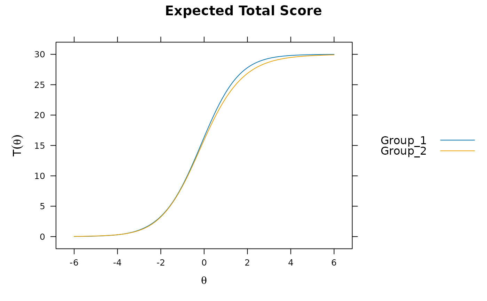
# significant DIF in multiple items....
# DIF(mod2, which.par=c('a1', 'd'), items2test=16:30)
DRF(mod2)
#> groups n_focal_items sDRF uDRF dDRF
#> 1 Group_1,Group_2 30 -0.421 0.421 0.51
DRF(mod2, draws=500) #non-sig DTF due to item cancellation
#> groups n_focal_items stat CI_2.5 CI_97.5 X2 df p
#> sDRF Group_1,Group_2 30 -0.421 -1.085 0.273 1.529 1 0.216
#> uDRF Group_1,Group_2 30 0.421 0.135 1.093 4.801 2 0.091
#> dDRF Group_1,Group_2 30 0.510 0.188 1.244
## -------------
## systematic differing slopes and intercepts (clear DTF)
set.seed(1234)
dat1 <- simdata(a, d, N, itemtype = 'dich', mu=.50, sigma=matrix(1.5))
dat2 <- simdata(a + c(numeric(15), rnorm(n-15, 1, .25)),
d + c(numeric(15), rnorm(n-15, 1, .5)),
N, itemtype = 'dich')
dat <- rbind(dat1, dat2)
mod3 <- multipleGroup(dat, model, group=group, SE=TRUE,
invariance=c('free_means', 'free_var'))
#>
Iteration: 1, Log-Lik: -16715.507, Max-Change: 0.98729
Iteration: 2, Log-Lik: -16345.007, Max-Change: 0.27994
Iteration: 3, Log-Lik: -16327.087, Max-Change: 0.10195
Iteration: 4, Log-Lik: -16320.104, Max-Change: 0.06172
Iteration: 5, Log-Lik: -16315.691, Max-Change: 0.06128
Iteration: 6, Log-Lik: -16312.385, Max-Change: 0.05915
Iteration: 7, Log-Lik: -16305.493, Max-Change: 0.22054
Iteration: 8, Log-Lik: -16300.452, Max-Change: 0.05299
Iteration: 9, Log-Lik: -16298.998, Max-Change: 0.03911
Iteration: 10, Log-Lik: -16296.018, Max-Change: 0.14260
Iteration: 11, Log-Lik: -16293.002, Max-Change: 0.03103
Iteration: 12, Log-Lik: -16292.301, Max-Change: 0.03576
Iteration: 13, Log-Lik: -16290.703, Max-Change: 0.08548
Iteration: 14, Log-Lik: -16289.209, Max-Change: 0.02013
Iteration: 15, Log-Lik: -16288.846, Max-Change: 0.02102
Iteration: 16, Log-Lik: -16288.071, Max-Change: 0.04077
Iteration: 17, Log-Lik: -16287.588, Max-Change: 0.01965
Iteration: 18, Log-Lik: -16287.373, Max-Change: 0.01920
Iteration: 19, Log-Lik: -16286.895, Max-Change: 0.04082
Iteration: 20, Log-Lik: -16286.399, Max-Change: 0.01257
Iteration: 21, Log-Lik: -16286.283, Max-Change: 0.01456
Iteration: 22, Log-Lik: -16286.034, Max-Change: 0.02807
Iteration: 23, Log-Lik: -16285.764, Max-Change: 0.00984
Iteration: 24, Log-Lik: -16285.701, Max-Change: 0.01075
Iteration: 25, Log-Lik: -16285.568, Max-Change: 0.01968
Iteration: 26, Log-Lik: -16285.420, Max-Change: 0.00777
Iteration: 27, Log-Lik: -16285.386, Max-Change: 0.00840
Iteration: 28, Log-Lik: -16285.314, Max-Change: 0.01408
Iteration: 29, Log-Lik: -16285.233, Max-Change: 0.00525
Iteration: 30, Log-Lik: -16285.214, Max-Change: 0.00635
Iteration: 31, Log-Lik: -16285.175, Max-Change: 0.01020
Iteration: 32, Log-Lik: -16285.130, Max-Change: 0.00408
Iteration: 33, Log-Lik: -16285.120, Max-Change: 0.00471
Iteration: 34, Log-Lik: -16285.098, Max-Change: 0.00748
Iteration: 35, Log-Lik: -16285.073, Max-Change: 0.00326
Iteration: 36, Log-Lik: -16285.067, Max-Change: 0.00356
Iteration: 37, Log-Lik: -16285.055, Max-Change: 0.00551
Iteration: 38, Log-Lik: -16285.041, Max-Change: 0.00243
Iteration: 39, Log-Lik: -16285.038, Max-Change: 0.00260
Iteration: 40, Log-Lik: -16285.031, Max-Change: 0.00409
Iteration: 41, Log-Lik: -16285.024, Max-Change: 0.00210
Iteration: 42, Log-Lik: -16285.022, Max-Change: 0.00203
Iteration: 43, Log-Lik: -16285.018, Max-Change: 0.00304
Iteration: 44, Log-Lik: -16285.014, Max-Change: 0.00125
Iteration: 45, Log-Lik: -16285.013, Max-Change: 0.00164
Iteration: 46, Log-Lik: -16285.010, Max-Change: 0.00206
Iteration: 47, Log-Lik: -16285.008, Max-Change: 0.00095
Iteration: 48, Log-Lik: -16285.008, Max-Change: 0.00123
Iteration: 49, Log-Lik: -16285.006, Max-Change: 0.00177
Iteration: 50, Log-Lik: -16285.005, Max-Change: 0.00069
Iteration: 51, Log-Lik: -16285.005, Max-Change: 0.00086
Iteration: 52, Log-Lik: -16285.004, Max-Change: 0.00122
Iteration: 53, Log-Lik: -16285.003, Max-Change: 0.00068
Iteration: 54, Log-Lik: -16285.003, Max-Change: 0.00068
Iteration: 55, Log-Lik: -16285.002, Max-Change: 0.00102
Iteration: 56, Log-Lik: -16285.002, Max-Change: 0.00054
Iteration: 57, Log-Lik: -16285.002, Max-Change: 0.00059
Iteration: 58, Log-Lik: -16285.002, Max-Change: 0.00078
Iteration: 59, Log-Lik: -16285.001, Max-Change: 0.00031
Iteration: 60, Log-Lik: -16285.001, Max-Change: 0.00036
Iteration: 61, Log-Lik: -16285.001, Max-Change: 0.00056
Iteration: 62, Log-Lik: -16285.001, Max-Change: 0.00032
Iteration: 63, Log-Lik: -16285.001, Max-Change: 0.00031
Iteration: 64, Log-Lik: -16285.001, Max-Change: 0.00044
Iteration: 65, Log-Lik: -16285.001, Max-Change: 0.00023
Iteration: 66, Log-Lik: -16285.001, Max-Change: 0.00028
Iteration: 67, Log-Lik: -16285.000, Max-Change: 0.00030
Iteration: 68, Log-Lik: -16285.000, Max-Change: 0.00016
Iteration: 69, Log-Lik: -16285.000, Max-Change: 0.00015
Iteration: 70, Log-Lik: -16285.000, Max-Change: 0.00027
Iteration: 71, Log-Lik: -16285.000, Max-Change: 0.00016
Iteration: 72, Log-Lik: -16285.000, Max-Change: 0.00019
Iteration: 73, Log-Lik: -16285.000, Max-Change: 0.00015
Iteration: 74, Log-Lik: -16285.000, Max-Change: 0.00015
Iteration: 75, Log-Lik: -16285.000, Max-Change: 0.00011
Iteration: 76, Log-Lik: -16285.000, Max-Change: 0.00011
Iteration: 77, Log-Lik: -16285.000, Max-Change: 0.00011
Iteration: 78, Log-Lik: -16285.000, Max-Change: 0.00012
Iteration: 79, Log-Lik: -16285.000, Max-Change: 0.00017
Iteration: 80, Log-Lik: -16285.000, Max-Change: 0.00008
#>
#> Calculating information matrix...
plot(mod3) #visable DTF happening
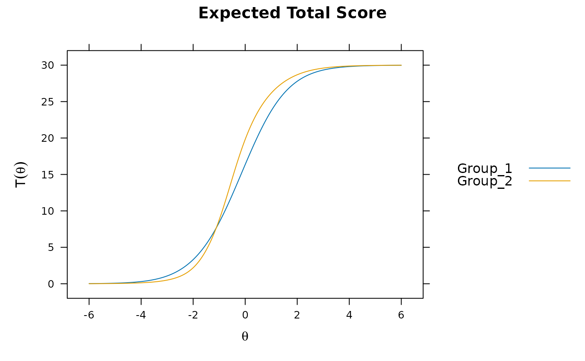
# DIF(mod3, c('a1', 'd'), items2test=16:30)
DRF(mod3) #unsigned bias. Signed bias (group 2 scores higher on average)
#> groups n_focal_items sDRF uDRF dDRF
#> 1 Group_1,Group_2 30 1.983 2.193 2.471
DRF(mod3, draws=500)
#> groups n_focal_items stat CI_2.5 CI_97.5 X2 df p
#> sDRF Group_1,Group_2 30 1.983 1.275 2.659 29.992 1 0
#> uDRF Group_1,Group_2 30 2.193 1.638 2.836 54.336 2 0
#> dDRF Group_1,Group_2 30 2.471 1.856 3.172
DRF(mod3, draws=500, plot=TRUE) #multiple DRF areas along Theta
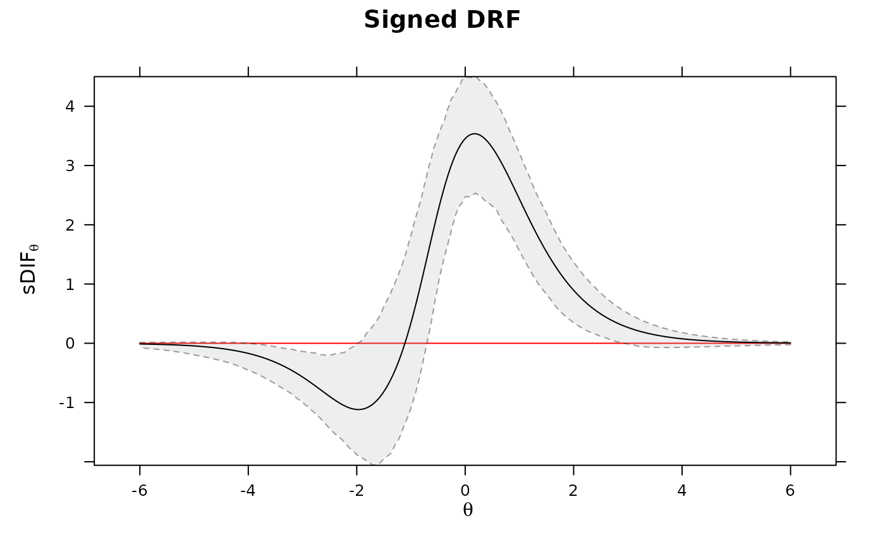
# plot the DIF
DRF(mod3, draws=500, DIF=TRUE, plot=TRUE)
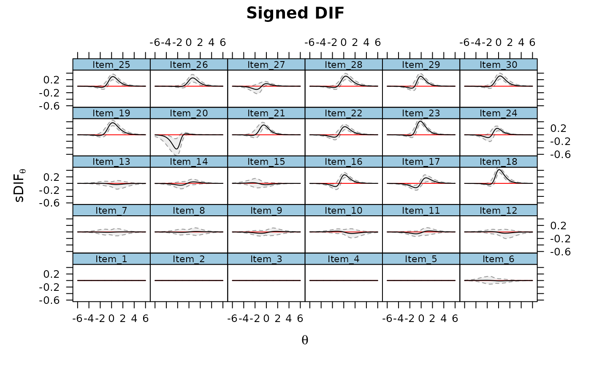
# evaluate specific values for sDRF
Theta_nodes <- matrix(seq(-6,6,length.out = 100))
sDTF <- DRF(mod3, Theta_nodes=Theta_nodes, draws=200)
head(sDTF)
#> Theta sDRF CI_2.5 CI_97.5
#> sDRF.1 -6.000 -0.012 -0.087 0.010
#> sDRF.2 -5.879 -0.014 -0.098 0.010
#> sDRF.3 -5.758 -0.016 -0.109 0.010
#> sDRF.4 -5.636 -0.019 -0.122 0.011
#> sDRF.5 -5.515 -0.022 -0.136 0.012
#> sDRF.6 -5.394 -0.026 -0.151 0.013
# DIF
sDIF <- DRF(mod3, Theta_nodes=Theta_nodes, focal_items = 30, draws=200)
car::some(sDIF)
#> Error in loadNamespace(x): there is no package called ‘car’
## ----------------------------------------------------------------
# polytomous example
# simulate data where group 2 has a different slopes/intercepts
set.seed(4321)
a1 <- a2 <- matrix(rlnorm(20,.2,.3))
a2[c(16:17, 19:20),] <- a1[c(16:17, 19:20),] + c(-.5, -.25, .25, .5)
# for the graded model, ensure that there is enough space between the intercepts,
# otherwise closer categories will not be selected often
diffs <- t(apply(matrix(runif(20*4, .3, 1), 20), 1, cumsum))
diffs <- -(diffs - rowMeans(diffs))
d1 <- d2 <- diffs + rnorm(20)
rownames(d1) <- rownames(d2) <- paste0('Item.', 1:20)
d2[16:20,] <- d1[16:20,] + matrix(c(-.5, -.5, -.5, -.5,
1, 0, 0, -1,
.5, .5, -.5, -.5,
1, .5, 0, -1,
.5, .5, .5, .5), byrow=TRUE, nrow=5)
tail(data.frame(a.group1 = a1, a.group2 = a2), 6)
#> a.group1 a.group2
#> 15 0.8465935 0.8465935
#> 16 1.9581395 1.4581395
#> 17 1.2486255 0.9986255
#> 18 0.8585293 0.8585293
#> 19 0.7584499 1.0084499
#> 20 0.9760766 1.4760766
list(d.group1 = d1[15:20,], d.group2 = d2[15:20,])
#> $d.group1
#> [,1] [,2] [,3] [,4]
#> Item.15 2.0841033 1.2423287 0.38217647 -0.0009005437
#> Item.16 0.2454193 -0.2924192 -0.63521843 -1.5254133343
#> Item.17 1.3003614 0.5847340 -0.09046573 -0.9841542611
#> Item.18 1.5079114 0.6489106 -0.03799347 -0.3892116221
#> Item.19 1.3766077 0.4483499 -0.20715833 -0.8701328534
#> Item.20 0.1461006 -0.8364834 -1.32963653 -1.6894534436
#>
#> $d.group2
#> [,1] [,2] [,3] [,4]
#> Item.15 2.0841033 1.2423287 0.38217647 -0.0009005437
#> Item.16 -0.2545807 -0.7924192 -1.13521843 -2.0254133343
#> Item.17 2.3003614 0.5847340 -0.09046573 -1.9841542611
#> Item.18 2.0079114 1.1489106 -0.53799347 -0.8892116221
#> Item.19 2.3766077 0.9483499 -0.20715833 -1.8701328534
#> Item.20 0.6461006 -0.3364834 -0.82963653 -1.1894534436
#>
itemtype <- rep('graded', nrow(a1))
N <- 600
dataset1 <- simdata(a1, d1, N, itemtype)
dataset2 <- simdata(a2, d2, N, itemtype, mu = -.25, sigma = matrix(1.25))
dat <- rbind(dataset1, dataset2)
group <- c(rep('D1', N), rep('D2', N))
# item 1-10 as anchors
mod <- multipleGroup(dat, group=group, SE=TRUE,
invariance=c(colnames(dat)[1:10], 'free_means', 'free_var'))
#>
Iteration: 1, Log-Lik: -31801.196, Max-Change: 0.71830
Iteration: 2, Log-Lik: -31265.510, Max-Change: 0.27906
Iteration: 3, Log-Lik: -31236.620, Max-Change: 0.13959
Iteration: 4, Log-Lik: -31229.495, Max-Change: 0.07370
Iteration: 5, Log-Lik: -31225.833, Max-Change: 0.04993
Iteration: 6, Log-Lik: -31223.203, Max-Change: 0.05007
Iteration: 7, Log-Lik: -31217.045, Max-Change: 0.19694
Iteration: 8, Log-Lik: -31214.029, Max-Change: 0.04346
Iteration: 9, Log-Lik: -31213.309, Max-Change: 0.02790
Iteration: 10, Log-Lik: -31212.009, Max-Change: 0.06871
Iteration: 11, Log-Lik: -31211.379, Max-Change: 0.01692
Iteration: 12, Log-Lik: -31211.140, Max-Change: 0.01291
Iteration: 13, Log-Lik: -31210.515, Max-Change: 0.05161
Iteration: 14, Log-Lik: -31210.184, Max-Change: 0.01059
Iteration: 15, Log-Lik: -31210.114, Max-Change: 0.00702
Iteration: 16, Log-Lik: -31209.947, Max-Change: 0.02582
Iteration: 17, Log-Lik: -31209.845, Max-Change: 0.00461
Iteration: 18, Log-Lik: -31209.825, Max-Change: 0.00312
Iteration: 19, Log-Lik: -31209.766, Max-Change: 0.01242
Iteration: 20, Log-Lik: -31209.740, Max-Change: 0.00251
Iteration: 21, Log-Lik: -31209.734, Max-Change: 0.00169
Iteration: 22, Log-Lik: -31209.714, Max-Change: 0.00642
Iteration: 23, Log-Lik: -31209.705, Max-Change: 0.00114
Iteration: 24, Log-Lik: -31209.703, Max-Change: 0.00086
Iteration: 25, Log-Lik: -31209.696, Max-Change: 0.00307
Iteration: 26, Log-Lik: -31209.693, Max-Change: 0.00063
Iteration: 27, Log-Lik: -31209.692, Max-Change: 0.00059
Iteration: 28, Log-Lik: -31209.689, Max-Change: 0.00155
Iteration: 29, Log-Lik: -31209.688, Max-Change: 0.00040
Iteration: 30, Log-Lik: -31209.688, Max-Change: 0.00038
Iteration: 31, Log-Lik: -31209.686, Max-Change: 0.00082
Iteration: 32, Log-Lik: -31209.686, Max-Change: 0.00027
Iteration: 33, Log-Lik: -31209.686, Max-Change: 0.00025
Iteration: 34, Log-Lik: -31209.685, Max-Change: 0.00057
Iteration: 35, Log-Lik: -31209.685, Max-Change: 0.00018
Iteration: 36, Log-Lik: -31209.685, Max-Change: 0.00017
Iteration: 37, Log-Lik: -31209.685, Max-Change: 0.00040
Iteration: 38, Log-Lik: -31209.685, Max-Change: 0.00013
Iteration: 39, Log-Lik: -31209.685, Max-Change: 0.00011
Iteration: 40, Log-Lik: -31209.685, Max-Change: 0.00027
Iteration: 41, Log-Lik: -31209.685, Max-Change: 0.00010
Iteration: 42, Log-Lik: -31209.685, Max-Change: 0.00008
#>
#> Calculating information matrix...
coef(mod, simplify=TRUE)
#> $D1
#> $items
#> a1 d1 d2 d3 d4
#> Item_1 1.194 0.911 0.177 -0.462 -1.105
#> Item_2 1.320 0.787 0.362 -0.152 -0.951
#> Item_3 1.561 0.794 0.013 -0.973 -1.774
#> Item_4 1.491 1.977 1.304 0.284 -0.236
#> Item_5 1.249 1.435 0.351 -0.329 -1.273
#> Item_6 2.071 0.517 0.072 -0.564 -1.551
#> Item_7 1.333 0.157 -0.374 -0.848 -1.911
#> Item_8 1.304 1.117 0.512 -0.467 -0.868
#> Item_9 1.830 1.501 0.639 -0.176 -0.906
#> Item_10 1.073 1.485 0.567 -0.190 -0.812
#> Item_11 1.327 2.039 1.529 0.756 -0.283
#> Item_12 1.481 -0.268 -1.021 -1.534 -2.229
#> Item_13 0.812 0.641 0.086 -0.832 -1.977
#> Item_14 1.713 1.850 1.191 0.511 -0.262
#> Item_15 0.913 2.168 1.401 0.468 0.058
#> Item_16 2.245 0.286 -0.345 -0.728 -1.687
#> Item_17 1.233 1.357 0.673 0.057 -0.916
#> Item_18 0.983 1.515 0.625 -0.171 -0.564
#> Item_19 0.946 1.415 0.521 -0.227 -0.966
#> Item_20 0.847 0.181 -0.828 -1.245 -1.624
#>
#> $means
#> F1
#> 0
#>
#> $cov
#> F1
#> F1 1
#>
#>
#> $D2
#> $items
#> a1 d1 d2 d3 d4
#> Item_1 1.194 0.911 0.177 -0.462 -1.105
#> Item_2 1.320 0.787 0.362 -0.152 -0.951
#> Item_3 1.561 0.794 0.013 -0.973 -1.774
#> Item_4 1.491 1.977 1.304 0.284 -0.236
#> Item_5 1.249 1.435 0.351 -0.329 -1.273
#> Item_6 2.071 0.517 0.072 -0.564 -1.551
#> Item_7 1.333 0.157 -0.374 -0.848 -1.911
#> Item_8 1.304 1.117 0.512 -0.467 -0.868
#> Item_9 1.830 1.501 0.639 -0.176 -0.906
#> Item_10 1.073 1.485 0.567 -0.190 -0.812
#> Item_11 1.106 1.818 1.282 0.635 -0.498
#> Item_12 1.562 -0.249 -0.917 -1.667 -2.266
#> Item_13 0.853 0.595 -0.044 -1.057 -1.890
#> Item_14 2.147 2.155 1.311 0.566 -0.248
#> Item_15 0.889 2.101 1.164 0.343 -0.010
#> Item_16 1.622 -0.395 -0.979 -1.278 -2.255
#> Item_17 1.060 2.345 0.587 -0.113 -2.040
#> Item_18 0.923 1.860 1.099 -0.508 -0.793
#> Item_19 1.051 2.528 0.960 -0.227 -1.976
#> Item_20 1.456 0.690 -0.277 -0.806 -1.164
#>
#> $means
#> F1
#> -0.303
#>
#> $cov
#> F1
#> F1 1.147
#>
#>
plot(mod)
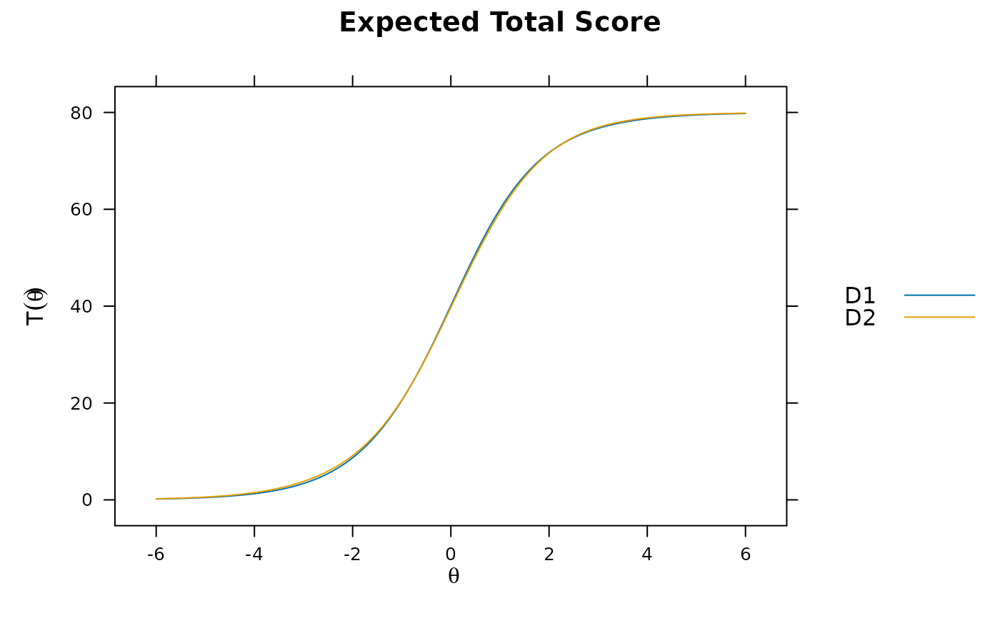
plot(mod, type='itemscore')
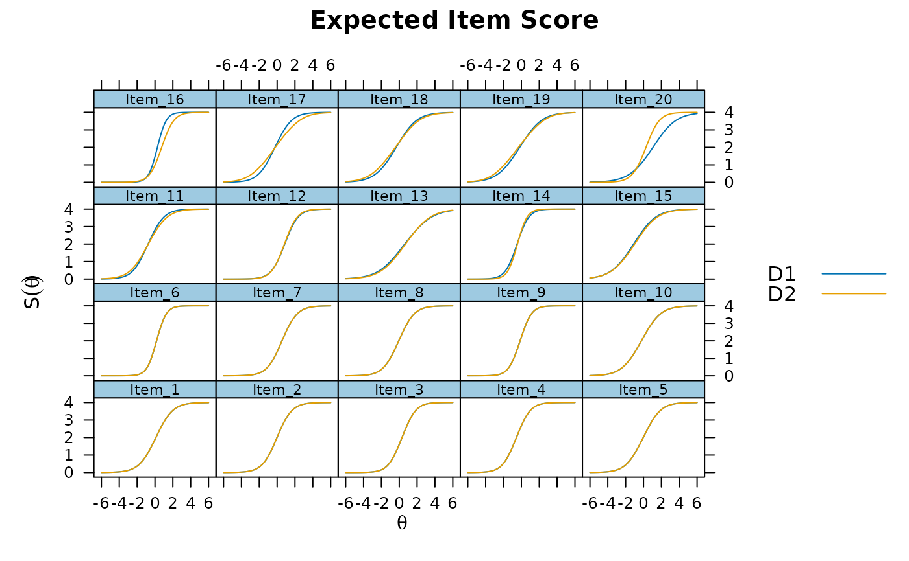
# DIF tests vis Wald method
DIF(mod, items2test=11:20,
which.par=c('a1', paste0('d', 1:4)),
Wald=TRUE, p.adjust='holm')
#> groups W df p adj_p
#> Item_11 D1,D2 5.854 5 0.321 1
#> Item_12 D1,D2 4.808 5 0.44 1
#> Item_13 D1,D2 6.854 5 0.232 1
#> Item_14 D1,D2 4.854 5 0.434 1
#> Item_15 D1,D2 3.861 5 0.57 1
#> Item_16 D1,D2 35.918 5 0 0
#> Item_17 D1,D2 121.671 5 0 0
#> Item_18 D1,D2 45.135 5 0 0
#> Item_19 D1,D2 96.182 5 0 0
#> Item_20 D1,D2 32.769 5 0 0
DRF(mod)
#> groups n_focal_items sDRF uDRF dDRF
#> 1 D1,D2 20 -0.195 0.329 0.382
DRF(mod, DIF=TRUE, focal_items=11:20)
#> groups item sDIF uDIF dDIF
#> 1 D1,D2 Item_11 -0.080 0.119 0.131
#> 2 D1,D2 Item_12 0.011 0.024 0.031
#> 3 D1,D2 Item_13 -0.068 0.069 0.072
#> 4 D1,D2 Item_14 -0.010 0.121 0.134
#> 5 D1,D2 Item_15 -0.083 0.083 0.085
#> 6 D1,D2 Item_16 -0.393 0.402 0.522
#> 7 D1,D2 Item_17 -0.053 0.219 0.248
#> 8 D1,D2 Item_18 0.038 0.093 0.110
#> 9 D1,D2 Item_19 0.073 0.104 0.122
#> 10 D1,D2 Item_20 0.370 0.425 0.542
DRF(mod, DIF.cats=TRUE, focal_items=11:20)
#> groups item cat sDIF uDIF dDIF
#> 1 D1,D2 Item_11 1 0.009 0.021 0.024
#> 2 D1,D2 Item_11 2 0.012 0.012 0.012
#> 3 D1,D2 Item_11 3 -0.010 0.015 0.018
#> 4 D1,D2 Item_11 4 0.032 0.032 0.034
#> 5 D1,D2 Item_11 5 -0.041 0.045 0.056
#> 6 D1,D2 Item_12 1 -0.004 0.008 0.010
#> 7 D1,D2 Item_12 2 -0.015 0.015 0.017
#> 8 D1,D2 Item_12 3 0.031 0.031 0.036
#> 9 D1,D2 Item_12 4 -0.013 0.013 0.015
#> 10 D1,D2 Item_12 5 0.001 0.005 0.008
#> 11 D1,D2 Item_13 1 0.012 0.012 0.015
#> 12 D1,D2 Item_13 2 0.017 0.017 0.018
#> 13 D1,D2 Item_13 3 0.010 0.013 0.016
#> 14 D1,D2 Item_13 4 -0.050 0.050 0.053
#> 15 D1,D2 Item_13 5 0.011 0.011 0.016
#> 16 D1,D2 Item_14 1 -0.002 0.028 0.034
#> 17 D1,D2 Item_14 2 0.011 0.018 0.023
#> 18 D1,D2 Item_14 3 -0.004 0.012 0.013
#> 19 D1,D2 Item_14 4 -0.010 0.013 0.015
#> 20 D1,D2 Item_14 5 0.004 0.034 0.037
#> 21 D1,D2 Item_15 1 0.006 0.006 0.006
#> 22 D1,D2 Item_15 2 0.033 0.033 0.034
#> 23 D1,D2 Item_15 3 -0.014 0.014 0.018
#> 24 D1,D2 Item_15 4 -0.011 0.011 0.012
#> 25 D1,D2 Item_15 5 -0.014 0.014 0.015
#> 26 D1,D2 Item_16 1 0.099 0.103 0.126
#> 27 D1,D2 Item_16 2 0.004 0.025 0.031
#> 28 D1,D2 Item_16 3 -0.008 0.017 0.021
#> 29 D1,D2 Item_16 4 -0.001 0.033 0.047
#> 30 D1,D2 Item_16 5 -0.095 0.095 0.144
#> 31 D1,D2 Item_17 1 -0.147 0.147 0.175
#> 32 D1,D2 Item_17 2 0.154 0.154 0.170
#> 33 D1,D2 Item_17 3 0.024 0.024 0.024
#> 34 D1,D2 Item_17 4 0.132 0.132 0.152
#> 35 D1,D2 Item_17 5 -0.162 0.162 0.191
#> 36 D1,D2 Item_18 1 -0.055 0.055 0.064
#> 37 D1,D2 Item_18 2 -0.039 0.040 0.043
#> 38 D1,D2 Item_18 3 0.162 0.162 0.164
#> 39 D1,D2 Item_18 4 -0.023 0.023 0.024
#> 40 D1,D2 Item_18 5 -0.044 0.044 0.049
#> 41 D1,D2 Item_19 1 -0.133 0.133 0.145
#> 42 D1,D2 Item_19 2 0.054 0.059 0.083
#> 43 D1,D2 Item_19 3 0.078 0.078 0.083
#> 44 D1,D2 Item_19 4 0.137 0.137 0.155
#> 45 D1,D2 Item_19 5 -0.138 0.138 0.149
#> 46 D1,D2 Item_20 1 -0.072 0.098 0.110
#> 47 D1,D2 Item_20 2 -0.038 0.040 0.056
#> 48 D1,D2 Item_20 3 0.016 0.024 0.028
#> 49 D1,D2 Item_20 4 0.000 0.011 0.015
#> 50 D1,D2 Item_20 5 0.095 0.102 0.146
## ----------------------------------------------------------------
### multidimensional DTF
set.seed(1234)
n <- 50
N <- 1000
# only first 5 items as anchors within each dimension
model <- 'F1 = 1-25
F2 = 26-50
COV = F1*F2
CONSTRAINB = (1-5, a1), (1-5, 26-30, d), (26-30, a2)'
a <- matrix(c(rep(1, 25), numeric(50), rep(1, 25)), n)
d <- matrix(rnorm(n), n)
group <- c(rep('Group_1', N), rep('Group_2', N))
Cov <- matrix(c(1, .5, .5, 1.5), 2)
Mean <- c(0, 0.5)
# groups completely equal
dat1 <- simdata(a, d, N, itemtype = 'dich', sigma = cov2cor(Cov))
dat2 <- simdata(a, d, N, itemtype = 'dich', sigma = Cov, mu = Mean)
dat <- rbind(dat1, dat2)
mod <- multipleGroup(dat, model, group=group, SE=TRUE,
invariance=c('free_means', 'free_var'))
#>
Iteration: 1, Log-Lik: -57641.300, Max-Change: 0.51330
Iteration: 2, Log-Lik: -57392.994, Max-Change: 0.10016
Iteration: 3, Log-Lik: -57375.288, Max-Change: 0.04664
Iteration: 4, Log-Lik: -57368.953, Max-Change: 0.02512
Iteration: 5, Log-Lik: -57365.847, Max-Change: 0.01820
Iteration: 6, Log-Lik: -57364.035, Max-Change: 0.01375
Iteration: 7, Log-Lik: -57361.310, Max-Change: 0.02764
Iteration: 8, Log-Lik: -57360.393, Max-Change: 0.01195
Iteration: 9, Log-Lik: -57359.828, Max-Change: 0.01101
Iteration: 10, Log-Lik: -57358.543, Max-Change: 0.04039
Iteration: 11, Log-Lik: -57357.406, Max-Change: 0.00821
Iteration: 12, Log-Lik: -57357.166, Max-Change: 0.00722
Iteration: 13, Log-Lik: -57356.622, Max-Change: 0.02603
Iteration: 14, Log-Lik: -57356.134, Max-Change: 0.00541
Iteration: 15, Log-Lik: -57356.029, Max-Change: 0.00473
Iteration: 16, Log-Lik: -57355.793, Max-Change: 0.01675
Iteration: 17, Log-Lik: -57355.575, Max-Change: 0.00395
Iteration: 18, Log-Lik: -57355.527, Max-Change: 0.00313
Iteration: 19, Log-Lik: -57355.421, Max-Change: 0.01125
Iteration: 20, Log-Lik: -57355.322, Max-Change: 0.00302
Iteration: 21, Log-Lik: -57355.299, Max-Change: 0.00240
Iteration: 22, Log-Lik: -57355.251, Max-Change: 0.00853
Iteration: 23, Log-Lik: -57355.203, Max-Change: 0.00232
Iteration: 24, Log-Lik: -57355.192, Max-Change: 0.00183
Iteration: 25, Log-Lik: -57355.170, Max-Change: 0.00648
Iteration: 26, Log-Lik: -57355.146, Max-Change: 0.00179
Iteration: 27, Log-Lik: -57355.140, Max-Change: 0.00141
Iteration: 28, Log-Lik: -57355.129, Max-Change: 0.00495
Iteration: 29, Log-Lik: -57355.117, Max-Change: 0.00138
Iteration: 30, Log-Lik: -57355.114, Max-Change: 0.00107
Iteration: 31, Log-Lik: -57355.109, Max-Change: 0.00380
Iteration: 32, Log-Lik: -57355.102, Max-Change: 0.00106
Iteration: 33, Log-Lik: -57355.100, Max-Change: 0.00084
Iteration: 34, Log-Lik: -57355.098, Max-Change: 0.00291
Iteration: 35, Log-Lik: -57355.094, Max-Change: 0.00082
Iteration: 36, Log-Lik: -57355.093, Max-Change: 0.00064
Iteration: 37, Log-Lik: -57355.091, Max-Change: 0.00214
Iteration: 38, Log-Lik: -57355.089, Max-Change: 0.00064
Iteration: 39, Log-Lik: -57355.089, Max-Change: 0.00050
Iteration: 40, Log-Lik: -57355.088, Max-Change: 0.00156
Iteration: 41, Log-Lik: -57355.087, Max-Change: 0.00049
Iteration: 42, Log-Lik: -57355.087, Max-Change: 0.00039
Iteration: 43, Log-Lik: -57355.086, Max-Change: 0.00137
Iteration: 44, Log-Lik: -57355.085, Max-Change: 0.00039
Iteration: 45, Log-Lik: -57355.085, Max-Change: 0.00031
Iteration: 46, Log-Lik: -57355.085, Max-Change: 0.00093
Iteration: 47, Log-Lik: -57355.084, Max-Change: 0.00030
Iteration: 48, Log-Lik: -57355.084, Max-Change: 0.00024
Iteration: 49, Log-Lik: -57355.084, Max-Change: 0.00084
Iteration: 50, Log-Lik: -57355.084, Max-Change: 0.00025
Iteration: 51, Log-Lik: -57355.084, Max-Change: 0.00019
Iteration: 52, Log-Lik: -57355.083, Max-Change: 0.00055
Iteration: 53, Log-Lik: -57355.083, Max-Change: 0.00019
Iteration: 54, Log-Lik: -57355.083, Max-Change: 0.00015
Iteration: 55, Log-Lik: -57355.083, Max-Change: 0.00045
Iteration: 56, Log-Lik: -57355.083, Max-Change: 0.00015
Iteration: 57, Log-Lik: -57355.083, Max-Change: 0.00012
Iteration: 58, Log-Lik: -57355.083, Max-Change: 0.00039
Iteration: 59, Log-Lik: -57355.083, Max-Change: 0.00013
Iteration: 60, Log-Lik: -57355.083, Max-Change: 0.00009
#>
#> Calculating information matrix...
coef(mod, simplify=TRUE)
#> $Group_1
#> $items
#> a1 a2 d g u
#> Item_1 1.006 0.000 -1.208 0 1
#> Item_2 1.080 0.000 0.301 0 1
#> Item_3 0.833 0.000 1.126 0 1
#> Item_4 0.977 0.000 -2.342 0 1
#> Item_5 1.005 0.000 0.410 0 1
#> Item_6 0.864 0.000 0.428 0 1
#> Item_7 1.014 0.000 -0.495 0 1
#> Item_8 1.133 0.000 -0.472 0 1
#> Item_9 0.945 0.000 -0.585 0 1
#> Item_10 1.001 0.000 -0.787 0 1
#> Item_11 1.009 0.000 -0.390 0 1
#> Item_12 0.920 0.000 -1.061 0 1
#> Item_13 1.189 0.000 -0.711 0 1
#> Item_14 1.125 0.000 0.067 0 1
#> Item_15 1.122 0.000 0.896 0 1
#> Item_16 1.094 0.000 -0.203 0 1
#> Item_17 1.041 0.000 -0.479 0 1
#> Item_18 1.011 0.000 -0.849 0 1
#> Item_19 0.962 0.000 -0.768 0 1
#> Item_20 0.937 0.000 2.372 0 1
#> Item_21 0.935 0.000 0.082 0 1
#> Item_22 0.886 0.000 -0.482 0 1
#> Item_23 0.921 0.000 -0.443 0 1
#> Item_24 0.937 0.000 0.521 0 1
#> Item_25 0.959 0.000 -0.674 0 1
#> Item_26 0.000 0.999 -1.498 0 1
#> Item_27 0.000 0.978 0.590 0 1
#> Item_28 0.000 0.997 -1.035 0 1
#> Item_29 0.000 0.917 -0.055 0 1
#> Item_30 0.000 0.982 -0.970 0 1
#> Item_31 0.000 0.891 0.931 0 1
#> Item_32 0.000 0.863 -0.453 0 1
#> Item_33 0.000 1.140 -0.759 0 1
#> Item_34 0.000 0.943 -0.469 0 1
#> Item_35 0.000 1.289 -1.852 0 1
#> Item_36 0.000 0.791 -1.064 0 1
#> Item_37 0.000 0.980 -2.323 0 1
#> Item_38 0.000 1.051 -1.367 0 1
#> Item_39 0.000 1.097 -0.113 0 1
#> Item_40 0.000 0.908 -0.523 0 1
#> Item_41 0.000 1.059 1.708 0 1
#> Item_42 0.000 1.146 -1.078 0 1
#> Item_43 0.000 1.086 -0.967 0 1
#> Item_44 0.000 1.095 -0.415 0 1
#> Item_45 0.000 0.984 -1.066 0 1
#> Item_46 0.000 0.996 -0.726 0 1
#> Item_47 0.000 1.330 -1.037 0 1
#> Item_48 0.000 1.072 -1.148 0 1
#> Item_49 0.000 0.898 -0.429 0 1
#> Item_50 0.000 1.078 -0.525 0 1
#>
#> $means
#> F1 F2
#> 0 0
#>
#> $cov
#> F1 F2
#> F1 1.000 0.453
#> F2 0.453 1.000
#>
#>
#> $Group_2
#> $items
#> a1 a2 d g u
#> Item_1 1.006 0.000 -1.208 0 1
#> Item_2 1.080 0.000 0.301 0 1
#> Item_3 0.833 0.000 1.126 0 1
#> Item_4 0.977 0.000 -2.342 0 1
#> Item_5 1.005 0.000 0.410 0 1
#> Item_6 0.886 0.000 0.558 0 1
#> Item_7 0.967 0.000 -0.583 0 1
#> Item_8 0.988 0.000 -0.613 0 1
#> Item_9 0.962 0.000 -0.467 0 1
#> Item_10 0.865 0.000 -0.999 0 1
#> Item_11 1.076 0.000 -0.448 0 1
#> Item_12 1.145 0.000 -1.198 0 1
#> Item_13 0.991 0.000 -0.789 0 1
#> Item_14 1.039 0.000 0.070 0 1
#> Item_15 1.200 0.000 1.070 0 1
#> Item_16 0.989 0.000 -0.084 0 1
#> Item_17 0.995 0.000 -0.569 0 1
#> Item_18 0.932 0.000 -0.925 0 1
#> Item_19 0.866 0.000 -0.790 0 1
#> Item_20 1.122 0.000 2.463 0 1
#> Item_21 1.055 0.000 0.200 0 1
#> Item_22 1.107 0.000 -0.610 0 1
#> Item_23 0.992 0.000 -0.513 0 1
#> Item_24 0.992 0.000 0.388 0 1
#> Item_25 0.934 0.000 -0.794 0 1
#> Item_26 0.000 0.999 -1.498 0 1
#> Item_27 0.000 0.978 0.590 0 1
#> Item_28 0.000 0.997 -1.035 0 1
#> Item_29 0.000 0.917 -0.055 0 1
#> Item_30 0.000 0.982 -0.970 0 1
#> Item_31 0.000 1.015 0.962 0 1
#> Item_32 0.000 1.115 -0.595 0 1
#> Item_33 0.000 1.095 -0.874 0 1
#> Item_34 0.000 0.856 -0.486 0 1
#> Item_35 0.000 1.138 -1.636 0 1
#> Item_36 0.000 1.085 -1.353 0 1
#> Item_37 0.000 1.115 -2.169 0 1
#> Item_38 0.000 1.146 -1.450 0 1
#> Item_39 0.000 1.130 -0.441 0 1
#> Item_40 0.000 0.978 -0.632 0 1
#> Item_41 0.000 1.202 1.439 0 1
#> Item_42 0.000 0.942 -0.943 0 1
#> Item_43 0.000 1.033 -0.899 0 1
#> Item_44 0.000 1.144 -0.339 0 1
#> Item_45 0.000 0.844 -0.728 0 1
#> Item_46 0.000 1.068 -1.046 0 1
#> Item_47 0.000 0.952 -1.123 0 1
#> Item_48 0.000 1.018 -1.317 0 1
#> Item_49 0.000 0.881 -0.381 0 1
#> Item_50 0.000 1.092 -0.605 0 1
#>
#> $means
#> F1 F2
#> 0.072 0.505
#>
#> $cov
#> F1 F2
#> F1 1.068 0.518
#> F2 0.518 1.415
#>
#>
plot(mod, degrees = c(45,45))
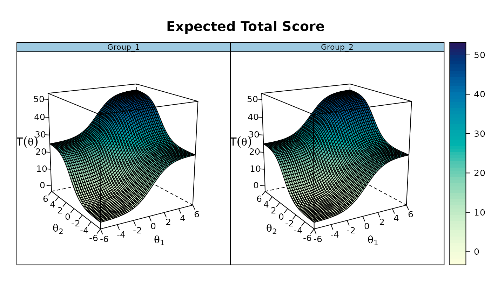
DRF(mod)
#> groups n_focal_items sDRF uDRF dDRF
#> 1 Group_1,Group_2 50 -0.347 0.347 0.353
# some intercepts slightly higher in Group 2
d2 <- d
d2[c(10:15, 31:35)] <- d2[c(10:15, 31:35)] + 1
dat1 <- simdata(a, d, N, itemtype = 'dich', sigma = cov2cor(Cov))
dat2 <- simdata(a, d2, N, itemtype = 'dich', sigma = Cov, mu = Mean)
dat <- rbind(dat1, dat2)
mod <- multipleGroup(dat, model, group=group, SE=TRUE,
invariance=c('free_means', 'free_var'))
#>
Iteration: 1, Log-Lik: -57937.190, Max-Change: 0.62019
Iteration: 2, Log-Lik: -57365.701, Max-Change: 0.07072
Iteration: 3, Log-Lik: -57334.945, Max-Change: 0.05126
Iteration: 4, Log-Lik: -57320.803, Max-Change: 0.03803
Iteration: 5, Log-Lik: -57313.237, Max-Change: 0.02915
Iteration: 6, Log-Lik: -57308.853, Max-Change: 0.02204
Iteration: 7, Log-Lik: -57303.167, Max-Change: 0.03100
Iteration: 8, Log-Lik: -57301.894, Max-Change: 0.01051
Iteration: 9, Log-Lik: -57301.162, Max-Change: 0.01009
Iteration: 10, Log-Lik: -57299.862, Max-Change: 0.03454
Iteration: 11, Log-Lik: -57298.257, Max-Change: 0.00789
Iteration: 12, Log-Lik: -57297.986, Max-Change: 0.00718
Iteration: 13, Log-Lik: -57297.507, Max-Change: 0.02368
Iteration: 14, Log-Lik: -57296.884, Max-Change: 0.00446
Iteration: 15, Log-Lik: -57296.780, Max-Change: 0.00423
Iteration: 16, Log-Lik: -57296.592, Max-Change: 0.01393
Iteration: 17, Log-Lik: -57296.351, Max-Change: 0.00282
Iteration: 18, Log-Lik: -57296.311, Max-Change: 0.00270
Iteration: 19, Log-Lik: -57296.237, Max-Change: 0.00899
Iteration: 20, Log-Lik: -57296.141, Max-Change: 0.00172
Iteration: 21, Log-Lik: -57296.125, Max-Change: 0.00165
Iteration: 22, Log-Lik: -57296.095, Max-Change: 0.00567
Iteration: 23, Log-Lik: -57296.057, Max-Change: 0.00108
Iteration: 24, Log-Lik: -57296.051, Max-Change: 0.00103
Iteration: 25, Log-Lik: -57296.038, Max-Change: 0.00370
Iteration: 26, Log-Lik: -57296.022, Max-Change: 0.00067
Iteration: 27, Log-Lik: -57296.020, Max-Change: 0.00064
Iteration: 28, Log-Lik: -57296.014, Max-Change: 0.00242
Iteration: 29, Log-Lik: -57296.008, Max-Change: 0.00051
Iteration: 30, Log-Lik: -57296.006, Max-Change: 0.00040
Iteration: 31, Log-Lik: -57296.004, Max-Change: 0.00160
Iteration: 32, Log-Lik: -57296.001, Max-Change: 0.00038
Iteration: 33, Log-Lik: -57296.001, Max-Change: 0.00030
Iteration: 34, Log-Lik: -57296.000, Max-Change: 0.00108
Iteration: 35, Log-Lik: -57295.998, Max-Change: 0.00029
Iteration: 36, Log-Lik: -57295.998, Max-Change: 0.00023
Iteration: 37, Log-Lik: -57295.997, Max-Change: 0.00078
Iteration: 38, Log-Lik: -57295.997, Max-Change: 0.00022
Iteration: 39, Log-Lik: -57295.996, Max-Change: 0.00017
Iteration: 40, Log-Lik: -57295.996, Max-Change: 0.00059
Iteration: 41, Log-Lik: -57295.996, Max-Change: 0.00017
Iteration: 42, Log-Lik: -57295.996, Max-Change: 0.00013
Iteration: 43, Log-Lik: -57295.996, Max-Change: 0.00046
Iteration: 44, Log-Lik: -57295.995, Max-Change: 0.00015
Iteration: 45, Log-Lik: -57295.995, Max-Change: 0.00011
Iteration: 46, Log-Lik: -57295.995, Max-Change: 0.00039
Iteration: 47, Log-Lik: -57295.995, Max-Change: 0.00013
Iteration: 48, Log-Lik: -57295.995, Max-Change: 0.00010
#>
#> Calculating information matrix...
coef(mod, simplify=TRUE)
#> $Group_1
#> $items
#> a1 a2 d g u
#> Item_1 0.942 0.000 -1.195 0 1
#> Item_2 0.973 0.000 0.294 0 1
#> Item_3 0.833 0.000 1.131 0 1
#> Item_4 1.049 0.000 -2.575 0 1
#> Item_5 1.078 0.000 0.517 0 1
#> Item_6 0.919 0.000 0.456 0 1
#> Item_7 0.929 0.000 -0.473 0 1
#> Item_8 0.918 0.000 -0.554 0 1
#> Item_9 0.907 0.000 -0.582 0 1
#> Item_10 1.096 0.000 -0.821 0 1
#> Item_11 1.000 0.000 -0.483 0 1
#> Item_12 0.986 0.000 -1.016 0 1
#> Item_13 1.013 0.000 -0.870 0 1
#> Item_14 0.861 0.000 0.104 0 1
#> Item_15 1.097 0.000 0.908 0 1
#> Item_16 0.871 0.000 -0.119 0 1
#> Item_17 0.949 0.000 -0.417 0 1
#> Item_18 1.019 0.000 -0.987 0 1
#> Item_19 1.031 0.000 -0.962 0 1
#> Item_20 0.904 0.000 2.378 0 1
#> Item_21 1.177 0.000 0.061 0 1
#> Item_22 1.044 0.000 -0.551 0 1
#> Item_23 0.948 0.000 -0.510 0 1
#> Item_24 0.915 0.000 0.387 0 1
#> Item_25 0.901 0.000 -0.778 0 1
#> Item_26 0.000 0.979 -1.450 0 1
#> Item_27 0.000 0.999 0.603 0 1
#> Item_28 0.000 1.105 -1.108 0 1
#> Item_29 0.000 1.034 0.043 0 1
#> Item_30 0.000 0.974 -0.925 0 1
#> Item_31 0.000 0.982 1.258 0 1
#> Item_32 0.000 1.012 -0.407 0 1
#> Item_33 0.000 0.957 -0.619 0 1
#> Item_34 0.000 1.076 -0.548 0 1
#> Item_35 0.000 0.761 -1.608 0 1
#> Item_36 0.000 0.962 -1.091 0 1
#> Item_37 0.000 0.891 -2.076 0 1
#> Item_38 0.000 0.895 -1.162 0 1
#> Item_39 0.000 1.023 -0.260 0 1
#> Item_40 0.000 0.949 -0.394 0 1
#> Item_41 0.000 1.145 1.451 0 1
#> Item_42 0.000 1.037 -1.063 0 1
#> Item_43 0.000 0.891 -0.937 0 1
#> Item_44 0.000 0.929 -0.397 0 1
#> Item_45 0.000 0.987 -0.887 0 1
#> Item_46 0.000 0.955 -1.032 0 1
#> Item_47 0.000 0.888 -1.063 0 1
#> Item_48 0.000 1.058 -1.267 0 1
#> Item_49 0.000 0.969 -0.486 0 1
#> Item_50 0.000 1.086 -0.442 0 1
#>
#> $means
#> F1 F2
#> 0 0
#>
#> $cov
#> F1 F2
#> F1 1.000 0.409
#> F2 0.409 1.000
#>
#>
#> $Group_2
#> $items
#> a1 a2 d g u
#> Item_1 0.942 0.000 -1.195 0 1
#> Item_2 0.973 0.000 0.294 0 1
#> Item_3 0.833 0.000 1.131 0 1
#> Item_4 1.049 0.000 -2.575 0 1
#> Item_5 1.078 0.000 0.517 0 1
#> Item_6 0.903 0.000 0.610 0 1
#> Item_7 1.006 0.000 -0.476 0 1
#> Item_8 0.889 0.000 -0.501 0 1
#> Item_9 0.855 0.000 -0.604 0 1
#> Item_10 0.892 0.000 0.069 0 1
#> Item_11 0.931 0.000 0.498 0 1
#> Item_12 0.962 0.000 0.065 0 1
#> Item_13 0.845 0.000 0.311 0 1
#> Item_14 0.893 0.000 1.036 0 1
#> Item_15 0.998 0.000 1.919 0 1
#> Item_16 0.949 0.000 -0.155 0 1
#> Item_17 0.989 0.000 -0.545 0 1
#> Item_18 0.866 0.000 -0.945 0 1
#> Item_19 0.893 0.000 -0.872 0 1
#> Item_20 0.732 0.000 2.195 0 1
#> Item_21 0.854 0.000 0.059 0 1
#> Item_22 0.783 0.000 -0.498 0 1
#> Item_23 0.966 0.000 -0.561 0 1
#> Item_24 0.944 0.000 0.384 0 1
#> Item_25 0.940 0.000 -0.794 0 1
#> Item_26 0.000 0.979 -1.450 0 1
#> Item_27 0.000 0.999 0.603 0 1
#> Item_28 0.000 1.105 -1.108 0 1
#> Item_29 0.000 1.034 0.043 0 1
#> Item_30 0.000 0.974 -0.925 0 1
#> Item_31 0.000 0.998 1.989 0 1
#> Item_32 0.000 1.190 0.252 0 1
#> Item_33 0.000 1.064 0.076 0 1
#> Item_34 0.000 0.885 0.444 0 1
#> Item_35 0.000 1.065 -0.597 0 1
#> Item_36 0.000 1.080 -1.273 0 1
#> Item_37 0.000 1.034 -2.217 0 1
#> Item_38 0.000 1.040 -1.451 0 1
#> Item_39 0.000 1.160 -0.496 0 1
#> Item_40 0.000 1.015 -0.711 0 1
#> Item_41 0.000 0.946 1.416 0 1
#> Item_42 0.000 1.006 -1.144 0 1
#> Item_43 0.000 0.969 -0.818 0 1
#> Item_44 0.000 1.099 -0.322 0 1
#> Item_45 0.000 1.062 -1.103 0 1
#> Item_46 0.000 1.064 -0.951 0 1
#> Item_47 0.000 1.025 -1.122 0 1
#> Item_48 0.000 0.975 -1.194 0 1
#> Item_49 0.000 1.083 -0.461 0 1
#> Item_50 0.000 0.935 -0.512 0 1
#>
#> $means
#> F1 F2
#> 0.003 0.578
#>
#> $cov
#> F1 F2
#> F1 1.165 0.459
#> F2 0.459 1.340
#>
#>
plot(mod, degrees = c(45,45))
 DRF(mod)
#> groups n_focal_items sDRF uDRF dDRF
#> 1 Group_1,Group_2 50 1.803 1.803 1.831
DRF(mod, draws = 500)
#> groups n_focal_items stat CI_2.5 CI_97.5 X2 df p
#> sDRF Group_1,Group_2 50 1.803 1.232 2.303 44.609 1 0
#> uDRF Group_1,Group_2 50 1.803 1.232 2.303 47.432 2 0
#> dDRF Group_1,Group_2 50 1.831 1.278 2.354
# }
DRF(mod)
#> groups n_focal_items sDRF uDRF dDRF
#> 1 Group_1,Group_2 50 1.803 1.803 1.831
DRF(mod, draws = 500)
#> groups n_focal_items stat CI_2.5 CI_97.5 X2 df p
#> sDRF Group_1,Group_2 50 1.803 1.232 2.303 44.609 1 0
#> uDRF Group_1,Group_2 50 1.803 1.232 2.303 47.432 2 0
#> dDRF Group_1,Group_2 50 1.831 1.278 2.354
# }